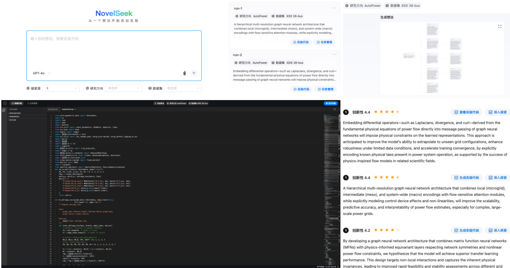

NOVELSEEK: When Agent Becomes the Scientist – Building Closed-Loop System from Hypothesis to Verification
None
Abstract
この論文が目指すのはコレ！
このアブストラクトでは、NOVELSEEKという画期的なAIフレームワークを紹介します。このシステムのすごいところは、まるでAI自身が科学者になったかのように振る舞い、仮説を立てることから実験による検証までの一連の科学研究プロセスを完全に自動で、しかも閉じたループの中で行える点です。しかも、一人ではなく複数のAIエージェントが協力して研究を進めます。これにより、化学、生物学、情報科学といった様々な科学分野で、これまで人間では時間も手間もかかっていた複雑な問題を、ものすごいスピードと高い精度で解決できるようになることを目指しています。
背景：AIが科学研究のカタチを変える
人工知能（AI）の技術は、日進月歩で進化しており、科学研究の世界にも大きな変革をもたらしています。AIは、単に研究作業の効率を上げるだけでなく、これまで人間では思いもよらなかったような新しいアイデアやアプローチを生み出し、科学技術の革新（イノベーション）を力強く推進しているのです。まさに、科学の新しい扉を開く鍵となりつつあります。🔑🔬
そこで私たちが提案するのが、NOVELSEEKです。これは、様々な科学研究分野で自律的科学研究（ASR: Autonomous Scientific Research）を実施するために開発された、統一された閉ループ・マルチエージェントフレームワークです。
システムが何かを実行し（出力）、その結果を自分自身で評価・分析し（フィードバック）、その学びを次の行動計画に活かして改善を繰り返す仕組みのことです。
例：料理のレシピを試作 → 味見して改善点発見 → レシピ修正 → 再度試作… 🔄
NOVELSEEKでは、AIが立てた仮説を検証し、その結果をもとにさらに良い仮説へと進化させていきます。
複数の独立した「エージェント」（自律的に行動するプログラムや実体）が、互いに情報を交換したり協力したりしながら、共通の大きな目標を達成しようとするシステムのことです。
例：サッカーチームのように、各選手（エージェント）がそれぞれの役割を果たしつつ連携してゴールを目指すイメージです。 ⚽️🤝
NOVELSEEKでは、文献調査、アイデア創出、実験計画、コード実装など、それぞれ専門のAIエージェントが分担・協力します。
ASRは「Autonomous Scientific Research」の略で、AIが人間の直接的な指示や介入なしに、自ら科学的な問題を発見し、仮説を立て、実験を計画・実行し、結果を分析して新しい知識を生み出すという、一連の科学的探求プロセスを自律的に行うことを指します。まるでAIが独立した研究者のように活動するイメージです。👨🔬 🤖
このNOVELSEEKフレームワークにより、研究者は様々な科学分野で直面する複雑な問題に対して、これまでの常識を覆すほどの驚異的なスピードと、極めて高い精度で取り組むことが可能になります。まさに研究のゲームチェンジャーです！ ⚡🎯
NOVELSEEKが誇る3つの主要な強み
NOVELSEEKは、以下の3つの大きな特徴によって、科学研究の新しい地平を切り開きます！
1) スケーラビリティ (Scalability)
NOVELSEEKは非常に柔軟で、その能力は一つの分野に留まりません。合計12種類もの異なる科学研究タスク（例えば、化学反応の予測から画像認識、さらには言語モデルの調整まで！）において、その汎用性の高さを実証しました。🗺️
革新的アイデア生成力！
既存の研究で使われているベースラインとなっているプログラムコードの性能をさらに向上させるための、斬新で創造的なアイデアを自ら生み出すことができます。✨
既存手法 NOVELSEEKによる新アイデア 性能向上📈
2) インタラクティビティ (Interactivity)
NOVELSEEKは、完全に自動化された研究プロセス（仮説立案から検証までをAIが通しで行うプロセス）の中で、人間の専門家がフィードバックを提供したり、複数のAIエージェント同士が情報をやり取りしたりするための専用インターフェースを備えています。🤝💻
専門家の知恵をAIに！
この機能により、特定の研究分野の専門家が持つ深い知識や経験を、AIの研究プロセスにスムーズかつ効果的に組み込むことが可能です。これにより、AIだけでは気づけない視点や、より質の高い研究成果が期待できます。👩🔬 + 🤖 = 🚀
⟺
3) 効率性 (Efficiency)
NOVELSEEKは、いくつかの科学分野において、人間が同様の研究成果を得ようとした場合にかかるであろう時間と比較して、著しく短い時間コストで、目覚ましい性能向上を達成しています。⏱️💨 (従来数ヶ月かかっていた改善を、数時間～数十時間で達成！)
-
化学反応収率予測 :
わずか 12時間 の稼働で、予測モデルの性能（決定係数 $R^2$）が $27.6\%$ から $35.4\%$ へと大幅に向上しました。 -
エンハンサー活性予測 :
たった 4時間 の処理で、エンハンサーDNA配列の活性を予測するモデルの性能を示すピアソン相関係数が 0.65 から 0.79 へと顕著に上昇しました。ピアソン相関係数とは？
2つの量的データの間にどれくらい直線的な関係があるかを示す統計的指標です。値は-1から1の間をとり、1に近いほど強い正の相関（一方が増えるともう一方も増える）、-1に近いほど強い負の相関（一方が増えるともう一方は減る）、0に近いほど相関が弱い（またはない）ことを意味します。
-
2Dセマンティックセグメンテーション :
画像内の各ピクセルが何を表すかを識別するタスクで、わずか 30時間 で、その精度（mIoU: mean Intersection over Union）が $78.\bar{8}\%$ から $81.\bar{0}\%$ へと向上しました。数値表記について
論文中の $78.\bar{8}\%$ は、$78.888...\%$ のように8が無限に続く循環小数を意味します。同様に、$81.\bar{0}\%$ は $81.000...\%$ であり、$81.0\%$ と同じです。この解説では、それぞれ約 $78.9\%$ (または $78.88\%$ )、$81.0\%$ と解釈できます。
1 Introduction
このセクションでは、 自律的科学発見 (Autonomous Scientific Discovery, ASD) というエキサイティングな研究分野の入口に立ちます。ASDが何であり、どのような可能性を秘めているのか、そして現在どのような課題に直面しているのかを概観します。そして、本論文で提案する革新的なフレームワーク NOVELSEEK が、これらの課題にどのように取り組み、科学研究の未来をどう変えようとしているのか、その壮大なビジョンの一端を明らかにします。
近年、科学研究の進め方が大きく変わろうとしています。その中心にあるのが、自律的科学発見 (Autonomous Scientific Discovery, ASD) という考え方です。
ASDとは、 大規模言語モデル (Large Language Models, LLMs) (Yang et al., 2024; Chen et al., 2024; Wang et al., 2024a; Guo et al., 2025) や ロボティクス を活用して、人間が直接介入することなく、独立して科学研究を行うことを指します (Yuan et al., 2025; Yan et al., 2025; Gottweis et al., 2025; Yamada et al., 2025; Lu et al., 2024)。
このアプローチは、様々な科学分野における発見のペースを劇的に加速させる変革的な可能性を秘めています。具体的には、以下のようなタスクを自動化します。
データ分析
仮説生成
実験計画
結果解釈
これらの自動化システム (Yuan et al., 2025; Lu et al., 2024) は、膨大な量の情報を効率的に処理し、人間の研究者では見つけるのが難しいかもしれないパターンや洞察を発見することができます。
ASRの有望性と直面する課題
ASRは非常に有望ですが、実用化に向けてはいくつかの大きな壁があります。特に、以下の2点が重要な課題として挙げられます。
課題1: 効果的かつ新規性のある提案の生成
自律システムは、単に既存の知識をなぞるだけでなく、真に新しく、かつ科学的に妥当な仮説を生み出す必要があります。
- 研究ギャップの特定: 未解決の問題や新たな研究領域を見つけ出すこと。
- 創造性と厳密性のバランス: 革新的なアイデアと科学的根拠の両立は、既存のデータやパターンに依存するAIモデルにとって困難な課題です。
- 広範な科学的文脈の理解: 提案の新規性を保証するには、関連分野全体の深い理解が必要ですが、これは訓練データの質と範囲に制約されるAIモデルにとっては難しい点です。
既存データからの学習
課題2: クローズドループフィードバックと実験検証
生成された仮説を実験によって検証し、その結果を次の仮説改良に繋げるクローズドループの実現も大きなハードルです。
実験計画 → 実行 → 結果分析 → 仮説改良という一連のプロセスを、システムが自律的に繰り返し行うことです。人間の手を介さずに、学習と改善が継続的に行われます。
- 複数ドメインの統合: ロボットによる実験実行や高度な分析技術など、異なる分野の技術をシームレスに統合する必要があります。
- 実世界の複雑性への対応: 実際の実験では予期せぬ変数やノイズがつきものであり、これらに自律システムが適応し学習するのは困難です。
- 堅牢な連携と適応性: 真のクローズドループシステムには、確実な協調動作、環境変化への適応能力、不確実性の取り扱いが求められ、これらは依然として技術的・概念的な障壁です。
NOVELSEEK: 新たな解決策の提案
これらのASRの課題克服と更なる発展を促進するために、本論文では NOVELSEEK というエンドツーエンドの自動研究パイプラインを提案します。
NOVELSEEKは、以下の4つの主要モジュールで構成されています:
革新的な研究アイデアを自律的に生み出し、進化させます。
人間の専門家の知見を取り入れ、アイデアを洗練させます。
抽象的なアイデアを具体的な研究手法へと落とし込みます。
実験を計画・実行し、得られた結果を検証します。
「自己進化的アイデア生成」と「アイデアから方法論への構築」モジュールの連携により、NOVELSEEKは大まかな提案を詳細かつ容易に実装可能な手法へと変換します。これにより、コード実装プロセスの成功率を高め、クローズドループ実験の効率を向上させます。
さらに、「複数ラウンドの実験計画と実行」モジュールを活用することで、NOVELSEEKは提案されたモジュールに従って実験計画を設計し、実験プロセスを分解できます。これにより、NOVELSEEKが生成した各モジュールの有効性を実験を通じて検証します。
図1: NOVELSEEKがサポートする12種類の科学研究タスクの範囲
AI分野から科学分野にわたり、反応収率予測、分子動力学、電力潮流推定、時系列予測、転写予測、エンハンサー活性予測、感情分類、2D画像分類、3D点群分類、2Dセマンティックセグメンテーション、3D自動運転、大規模視覚言語モデルのファインチューニングなど、多様なタスクに対応しています。
図1に示すように、NOVELSEEKは12の科学研究タスクでその有効性が検証されており、実験結果は、仮説生成から実験的検証に至る全プロセスにおいてNOVELSEEKが持つ顕著な価値を示しています。
例1: 反応収率予測 (Reaction Yield Prediction)
ベースラインモデルの性能: \(24.2\% \pm 4.2\)
NOVELSEEK
NOVELSEEKによる改善後: \(34.8\% \pm 1.1\) (わずか12時間で達成)
比較: 人間の研究者が同様の性能改善を達成するには、通常数ヶ月を要します。
例2: エンハンサー活性予測 (Enhancer Activity Prediction)
ベースラインモデル (DeepSTARR) の結果: 0.65 (Pearson相関係数)
NOVELSEEK
NOVELSEEK利用後: 0.79
(関連文献検索、コード自動生成、検証実施による)
これは有望な改善を示しています。
さらに、NOVELSEEKは複数のコードファイルから成る複雑なプロジェクトレベルの修正やデバッグもサポートしています。
これらの結果は、NOVELSEEKが自律的にアイデアを生成しアルゴリズムを設計できること、そして科学研究における人間の労力を効果的に削減できることを明確に示しています。
再現性のために
本研究で関与した全ての科学研究タスクで使用されたベースラインとNOVELSEEKによって生成されたコードは、以下でオープンソースとして公開されています:
https://github.com/Alpha-Innovator/NovelSeek
本論文の貢献
本論文の貢献は、以下のようにまとめられます。
多様な科学研究タスクのための
統一マルチエージェントフレームワーク
NOVELSEEKは、アイデア生成、アイデアから方法論への変換、実験実行、結果フィードバックといった研究サイクル全体を自動化できる、統一されたクローズドループ科学研究フレームワークです。このフレームワークは、様々な科学研究シナリオや分野に直接適用可能です。
協調研究を強化するための
対話型インターフェース
NOVELSEEKは、アイデア生成モジュール内およびシステム全体で人間と機械の協調作業のための対話型インターフェースを提供します。AIまたは人間の専門家を活用するといった協調モードを選択することで、アイデア生成の有効性評価を提供し、実験結果の評価、考察、文書化を促進します。
包括的な実験的検証と
人間による研究
NOVELSEEKを中心とした広範な人間による研究を実施しました。これには、NOVELSEEKが生成したアイデアの新規性を評価・採点するためにドメイン専門家を招待したり、人間の研究者とNOVELSEEKの研究効率を比較したりすることが含まれます。これらの実験と人間による研究は、オープンエンドな環境で科学研究タスクを実行するマルチエージェントシステムの能力に関する洞察を得るために不可欠です。多くの有望な現象が観察された一方で、改善が必要な特定の技術モジュールも特定されました。
2 NOVELSEEK
このセクションでは、論文の中核となるフレームワーク NOVELSEEK について詳しく解説します。
主な目的と論旨：
NOVELSEEKは、自律型科学研究（ASR: Autonomous Scientific Research）のための、統一された閉ループ型マルチエージェントフレームワークです。多様な科学分野における革新的な研究を促進することを目的として設計されています。論文の図2にも示されているように、このフレームワークは主に3つの重要な能力を備えています。
- 自己進化型アイデア生成と人間対話型フィードバック (セクション 2.1)：革新的な研究アイデアを自ら生み出し、人間からのフィードバックを取り入れて進化させます。
- 包括的なアイデアから方法論への構築 (セクション 2.2)：生まれたアイデアを、具体的で実行可能な研究計画（方法論）へと落とし込みます。
- マルチラウンド自動実験実行 (セクション 2.3)：計画された実験を自動で何度も実行し、結果を検証します。
これらの能力は、それぞれ専門知識を持つ複数のエージェント（AIプログラム）が協力することで実現され、異なるプロセスをシームレスに統合し、科学的発見を加速させることを目指します。
図2: NOVELSEEKフレームワークの全体像
図2の解説
この図はNOVELSEEKの全体像を示しており、中心にいるOrchestration Agent（調整エージェント）が様々なエージェント群を指揮し、科学研究タスクを進めていく様子が描かれています。
- 左側: Scientific Research Tasks（科学研究タスク）として、化学、生物学、CV（コンピュータビジョン）、NLP（自然言語処理）などが挙げられています。これらがNOVELSEEKの対象分野です。
- 中央上部: Self-evolving Idea Generation with Human-interactive Feedback（自己進化型アイデア生成と人間対話型フィードバック）のプロセスが示されています。
- Survey Agent: 文献調査を行います（arXiv, PubMedなど）。
- Idea Innovation Agent: 新しいアイデアを生成・進化させます。
- Code Review Agent: 既存のコードをレビューします。
- Assessment Agent: 生成されたアイデアを評価します。
- 人間からのフィードバックもこの段階で取り入れられます。
- 中央右部: Idea-to-Methodology Construction（アイデアから方法論への構築）のプロセスです。
- Methodology Development Agent: アイデアを具体的な研究計画に落とし込みます。
- 右下部: Evolutionary Experimental Planning and Execution（進化的実験計画と実行）のプロセスです。
- Coding Agent: 方法論に基づいてコードを実装します（Aider, Openhandsなどのツールを利用）。
- AutoDebug（自動デバッグ）が行われます。
- 実験結果のログが記録され、次の計画に活かされます。
- 全体: Workflow Memory（ワークフローメモリ）やPlanning Management（計画管理）といった要素が、プロセス全体を支えています。矢印は情報の流れや依存関係を示しています。例えば、Salty-Guided Perturbation (SGP)やGlobal Hierarchical Attention (GHA)といった具体的な手法のアイデア（数式も一部表示）が生成・評価されている様子も見て取れます。
このように、NOVELSEEKは複数のエージェントが連携し、アイデア生成から実験検証までを閉ループで実行する、包括的なフレームワークとなっています。
2.1 Self-Evolving Idea Generation with Human-interactive Feedback (自己進化型アイデア生成と人間対話型フィードバック)
この機能はNOVELSEEKの中核であり、フレームワークが革新的な研究アイデアを自律的に生成し、洗練させることを可能にします。このプロセスには、アイデア開発と洗練のさまざまな段階に貢献する、いくつかの専門エージェントが関与しています。
Survey Agent (調査エージェント)
Survey Agentは、様々な科学研究タスクの多様なニーズに応えるために設計されています。ユーザーが指定した要件や、既存の方法論を探るために必要な詳細度合いに、適応的に対応します。この適応性は、異なる研究文脈で効果的に新しいアイデアを生み出すために不可欠です。
📌主な責務: 科学論文の検索
科学的発見プロセスにおける文献研究の深さと幅の様々なニーズに対応するため、2つの異なるモードを提供します。
文献レビューモード (Literature Review Mode)
研究タスクを複数のキーワードの組み合わせに分解し、様々な学術データベースで広範な検索を可能にします。これらの情報源から科学文献を収集し、各文献の抄録を分析して、当面のタスクとの関連性を評価します。
キーワード生成プロセス:
\( P : \mathcal{T} \to \mathcal{K} \)
ここで、\(\mathcal{T}\) は研究タスクの説明、\(\mathcal{K}\) は生成されたキーワードの組み合わせの集合を表します。
各文献の関連性評価関数:
\( R : \mathcal{L}_{abs} \times \mathcal{T} \to [0, 1] \)
ここで、\(\mathcal{L}_{abs}\) は検索された文献 \(\mathcal{L}\) の抄録、\(R(l, t)\) (論文中では \(R(r,t)\) となっていますが、おそらく \(l\) のタイポです) は文献 \(l\) とタスク \(t\) の関連性を0から1の浮動小数点スコアで測定し、スコアが高いほど関連性が高いことを示します。
例：ある研究タスク「深層学習を用いた画像認識の精度向上」があった場合、
\(\mathcal{T}\) = "深層学習を用いた画像認識の精度向上"
\(P(\mathcal{T})\) により、\(\mathcal{K}\) = {"deep learning image recognition", "CNN accuracy improvement", ...} のようなキーワード群が生成されます。
ある論文の抄録 \(\mathcal{L}_{abs}\) が得られたとき、\(R(\mathcal{L}_{abs}, \mathcal{T})\) は例えば0.85といったスコアを返します。
深層研究モード (Deep Research Mode)
最初の文献調査の後、Survey Agentは関連する科学論文の全文をダウンロードし、徹底的に調査します。このより深い分析により、新たなキーワードの組み合わせを生成し、さらなる文献探索のラウンドを促進します。
新たなキーワード生成プロセス:
\( P : \mathcal{L} \to \mathcal{K}' \)
ここで、\(\mathcal{K}'\) は全文の詳細な分析から生成された、拡張されたキーワードの組み合わせの集合です。
例：文献レビューモードで見つかった重要論文の全文 \(\mathcal{L}\) を読んだ結果、新たな視点や専門用語が見つかり、\(\mathcal{K}'\) = {"attention mechanism image classification", "transformer vision accuracy", ...} のように、より専門的で深掘りされたキーワード群が生成されます。
研究段階の文脈に基づいて検索戦略を動的に調整することで、Survey Agentは研究ランドスケープの包括的かつ微妙な理解を保証します。この能力は、革新的なアイデアの生成をサポートするだけでなく、NOVELSEEKフレームワークが科学的発見の最前線にあり続けることを保証します。
Code Review Agent (コードレビューエージェント)
Code Review Agentは、さまざまな研究タスクのベースラインコードを理解するために不可欠です。改善点を特定し、新しい方法論を開発することで、イノベーションの基盤として機能します。コード構造、依存関係、機能の詳細な分析を提供し、NOVELSEEKが既存のコードベースを完全に理解し、研究目標を推進するための潜在的な機能強化を特定できるようにします。
📝主な機能:
- 複雑なコードベースの文書化と要約により、既存のメソッドの効率的なナビゲーションと利用を保証します。
- 2つのシナリオを管理します:
- ユーザー提供のコードのレビュー
- 関連するコードベースの検索
- ユーザーがアップロードしたコードについては、構造、ロジック、機能を包括的にレビューします。
- ユーザーがアップロードしたコードがない場合は、GitHubなどの公開リポジトリを検索して関連するコードベースを見つけ、リポジトリレベルとファイルレベルの両方で徹底的な分析を行い、相互依存関係を理解し、ロジック、効率、正確性を評価します。
- Pythonの'ast'モジュールを使用した静的コード分析を利用して、実行せずにコード構造を解析・理解します。
- 大規模言語モデル（LLM）が人間が読める説明と要約を生成し、技術的な詳細を構造化されたドキュメントに変換します。
- Pythonの'multiprocessing'モジュールによる並列処理を使用して、大規模なコードベースの効率とスケーラビリティを向上させます。
全体として、Code Review Agentは、コードリポジトリの理解を深め、科学研究におけるイノベーションをサポートする詳細なドキュメントを提供します。
Idea Innovation Agent (アイデア革新エージェント)
Idea Innovation AgentはNOVELSEEKの不可欠な部分であり、科学研究の創造的かつ反復的なプロセスを強化するように設計されています。このエージェントは、アイデアの生成と進化を自動化することで重要な役割を果たし、それによって従来の研作業 (Yuan et al., 2025; Yamada et al., 2025; Lu et al., 2024) の限界に対処します。従来の研究は、時間のかかる手作業に依存し、人間の認知バイアスによって制約されることがよくあります。
✨2つの主要な責務:
アイデア生成 (Idea Generation)
より高いtemperature設定（生成されるテキストのランダム性や創造性を高めるパラメータ）を持つ汎用LLMを利用します。これにより、より多様で創造的な出力の生成が促進されます。
このエージェントは、従来の調査では見過ごされる可能性のあるパターンや洞察を特定し、タスク定義、ベースライン手法、および現在の科学的知識に基づいて、斬新な仮説と戦略を生成できます。
アイデア生成プロセス:
\( G : (\mathcal{T}, B, \mathcal{L}) \to \mathcal{I} \)
（論文中では \(\mathcal{T}\) となっていますが、ここではアイデアの集合を \(\mathcal{I}\) とします）
ここで、\(\mathcal{T}\) はタスク定義、\(B\) はベースライン手法の分析、\(\mathcal{L}\) は関連文献、\(\mathcal{I}\) は生成されたアイデアの集合を表します。
例：タスク「新しい抗がん剤の開発」、ベースライン手法「既存の化合物のスクリーニング」、関連文献「最新の癌治療研究論文」を入力すると、\(G\) は「特定の遺伝子変異を持つ癌細胞に特異的に作用する化合物の設計」といった新しいアイデア \(\mathcal{I}\) を出力します。
LLMは、言語と文脈の包括的な理解を活用することで、より広範な可能性の探求を促進し、発見と革新のペースを加速します。
アイデア進化 (Idea Evolution)
既存のアイデアを改善するためにLLMの能力を活用します。このプロセスには、これらのアイデアの内容を分析し、新規性、実現可能性、科学的妥当性の評価を含むリフレクション（考察）を取り入れ、関連文献からの洞察を統合することが含まれます。
このアプローチにより、初期概念に固有の限界に対処することで、洗練された革新的なアイデアの生成が可能になります。
アイデア進化プロセス:
\( G : (\mathcal{I}, \mathcal{C}, \mathcal{L}) \to \mathcal{I}' \)
（論文中では \(\mathbb{Z}\) となっていますが、ここではアイデアの集合を \(\mathcal{I}\) とします）
ここで、\(\mathcal{I}\) は初期のアイデアの集合、\(\mathcal{C}\) はCritique（批評や評価）、\(\mathcal{L}\) は関連文献、\(\mathcal{I}'\) は進化したアイデアの集合を表します。
例：初期アイデア「太陽光発電効率を20%向上させる新素材」、批評「現在の技術ではコストが高い」、関連文献「低コストな代替素材に関する研究」を入力すると、\(G\) は「低コストな代替素材Xを用いた、太陽光発電効率を15%向上させる新素材の改良案」といった進化したアイデア \(\mathcal{I}'\) を出力します。
全体として、Idea Innovation Agentは、情報を統合し文脈化することによって、科学的なアイデアを実行可能で創造的な解決策へと強化します。現在のアイデアを批判的に検討し、人間エキスパートや他のNOVELSEEKエージェントとのフィードバックループを利用して継続的な改善を行います。この反復的なプロセスは、新規性、実現可能性、倫理的考慮事項のバランスを取り、影響力のあるバランスの取れたアイデアを生み出します。
Assessment Agent (評価エージェント)
Assessment AgentはNOVELSEEKの重要な構成要素であり、厳格な評価プロセスを通じて生成されたアイデアの品質と実行可能性を保証するように設計されています。急速に進化する科学研究の状況において、アイデアの体系的かつ客観的な評価は不可欠です。従来の方法はしばしば主観性に悩まされ、関連するすべての側面の包括的な網羅性に欠けており、有望なアイデアが見過ごされる可能性があります(Qiu et al., 2025; Si et al., 2024)。したがって、Assessment Agentは、構造化された多次元的な評価プロセスを提供することでこれらの課題に対処し、それがアイデア選択の信頼性と有効性を高めます。
📊主な責務と評価軸: 多次元スコアリングを用いたアイデアの批判的評価
各アイデアは、以下の主要な次元で分析されます。
- Coherence (一貫性): アイデアの論理的な一貫性と構造をチェックします。
- Credibility (信頼性): 既存の知識に基づいて信頼性を評価します。
- Verifiability (検証可能性): 経験的な方法を通じてアイデアの検証可能性を調べます。
- Novelty (新規性): 独創性を測定します。
- Alignment (整合性): 研究目標との一貫性を保証します。
さらに、各次元について、Assessment Agentはその推論を説明するための詳細な評価ナラティブ（説明文）を提供します。0から10までのスコアを割り当て、これらを加重合計して各アイデアの総合スコアを算出し、ランキングプロセスを支援します。高度なLLMを利用することで、エージェントは複雑な科学的概念を正確に処理および評価できます。この能力により、定性的側面と定量的側面の両方を含む包括的な評価が可能になり、評価が徹底的かつバランスの取れたものになることが保証されます。
🚀多様性の確保:
Assessment Agentは、トップランクのアイデア間の多様性を確保する能力も持っています。この能力により、高スコアのアイデアが過度に類似していたり、同じ元の概念から派生したりするのを防ぎます。多様なアイデアのプールを促進することで、エージェントは研究プロセスにおける多様な経路の探求を奨励します。これは、革新性と実用性のバランスを維持するために不可欠であり、最も有望なアイデアが高品質であり、互いに区別されることを保証します。
要約すると、多次元スコアリングにLLMを採用し、アイデア間の多様性を促進する能力を活用することで、Assessment Agentは、最も実行可能で革新的な概念のみがさらなる開発のために選択されることを保証します。このプロセスは、研究サイクルの効率を高めるだけでなく、よりダイナミックで多様な研究環境を育みます。
Human-interactive Feedback (人間対話型フィードバック)
マルチエージェントシステムの文脈において、人間対話型フィードバックは、複雑なタスクを効果的に管理し解決するための重要な構成要素です。人間の洞察を統合することで、エージェントは動的な環境をより効果的にナビゲートし、その出力を複雑なユーザー要件に合わせ、実用的な適用可能性を保証することができます。
NOVELSEEKの人間対話型フィードバックメカニズムは、主に2つのタイプに分類されます。
- 人間によって直接提供されるフィードバック
- エージェントによって自動生成されるフィードバック
人間が提供するフィードバックは、1つまたは複数のアイデアに対処でき、受け取ったフィードバックに基づいてこれらのアイデアをさらに洗練および調整するための洞察と批評を提供します。この反復的なプロセスは、アイデアの継続的な改善を促進し、特定の目的と課題を満たすようにアイデアが磨かれることを保証します。
💡 具体例: 医療画像セグメンテーション
LLMマルチエージェントシステムは、当初、より高度なセグメンテーションアルゴリズムの開発に焦点を当てた広範なアイデアを提案するかもしれません。しかし、人間のフィードバックは、特に医療ドメインに注意を向けることで、このアイデアを洗練することができます。
人間の専門家は、次のような洞察を提供できます。
- 多様な組織タイプへの対応
- 重要な構造を特定する際の高い精度の確保
このようなターゲットを絞ったフィードバックは、アイデアの焦点を鋭くするだけでなく、医療研究の特定のニーズと優先順位に合致することを保証し、その実用的な適用可能性と影響を高めます。

図3: アイデア進化の例 (化学反応収率予測タスク)
図3の解説: アイデア進化の木構造
この図は、化学反応の収率予測に関するアイデアが、NOVELSEEK内でどのように進化していくかを示しています。上から下へとアイデアが分岐し、洗練されていく様子が木構造で表現されています。
- Init Idea 0, 1, 2 (初期アイデア): 最初の段階で生成された3つの異なるアイデア。
- Init Idea 0: グラフ由来の反応記述子をトランスフォーマーの注意スコアの前提条件として追加し、化学的に関連する部分構造への計算を偏らせる。
- Init Idea 1: モダリティアライメント目的と対照学習損失を用いて、テキストSMILES埋め込みとGNN抽出分子グラフ埋め込みを融合し、収率予測精度を向上。
- Init Idea 2: SMILESベースのトークンシーケンスにおける循環依存性に特化した循環的注意機構を導入し、立体化学と反応特有の癖への注意を改善。
- Evolved Idea 0-0, 0-1, 0-2 (進化したアイデア - 第1段階): Init Idea 0から派生した3つのアイデア。元のアイデアをベースに、より具体的な手法や考慮事項が追加されています。
- Evolved Idea 0-0: 結合原子価や反応中心重要性などのグラフ由来反応記述子を用いて注意マスクを生成し、化学的に関連する部分構造に関連するSMILESトークンの注意スコアを選択的に変更。
- Evolved Idea 0-1: 結合原子価や反応中心重要性などのグラフ由来反応記述子を、交差注意機構を用いてトランスフォーマー注意層への補助入力として統合。
- Evolved Idea 0-2: 結合原子価、反応中心重要性、分子的変換などのグラフ由来反応記述子を用いて、SMILESトークンのためのグラフ認識位置埋め込みを計算。
- Evolved Idea 0-0-0, 0-0-1, 0-0-2 (進化したアイデア - 第2段階): Evolved Idea 0-0からさらに派生した3つのアイデア。さらに詳細な技術的要素（例：官能基記述子、階層的重み付け、GNN）が組み込まれています。
- Evolved Idea 0-0-1-0, 0-0-1-1, 0-0-1-2 (進化したアイデア - 第3段階): Evolved Idea 0-0-1から派生。ここでは、SMILESベースのLLaMAエンコーダとGCNの組み合わせや、ハイブリッドグラフ・トランスフォーマーネットワークといった、より具体的なアーキテクチャの提案が見られます。適応的層凍結や適応的ドロップアウトといった訓練戦略も言及されています。
このように、初期の抽象的なアイデアが、文献情報やエージェント間の相互作用（図では省略されていますが、Assessment Agentの評価やSurvey Agentの情報などが関与）を通じて、徐々に具体的で洗練された、実装可能なレベルのアイデアへと進化していく様子が示されています。
Orchestration Agent (調整エージェント)
Orchestration Agentは、システム内の他のすべてのエージェントを調整し、タスクを同期させ、データフローを管理することで協調を促進します。これにより、プロセスが効率的で、一貫性があり、研究目標に沿ったものになることが保証され、フレームワークが効果的な研究ツールとして機能できるようになります。
⚙️中心的な役割:
- Survey Agent、Code Review Agent、Idea Innovation Agent、Assessment Agentなどのエージェント間のワークフローの設計と管理。
- 特に高スコアのアイデアに対する人間からのフィードバックのタイミングの監督。
これには、タスクの実行と完了を最適化するために、各エージェントの能力とそれらの相互作用を理解することが必要です。
例：
- Survey Agentが適応的な文献探索を行い、Idea Innovation Agentが斬新な仮説を生成するために使用する洞察を提供します。Orchestration Agentは、これらの調査結果が効果的に伝達されることを保証します。
- 同様に、Code Review Agentの分析を同期させて、アイデアの評価と開発を強化します。
- さらに、Assessment Agentの評価プロセスを管理し、タイムリーで関連性の高い出力を保証します。これは、多様なトップアイデアの開発を導くのに役立ちます。
- 加えて、人間からのフィードバックの最適なポイントを決定し、高スコアのアイデアを特定した後に専門家の洞察を統合して、それらを洗練・適応させ、出力をユーザー要件に合わせます。
要約すると、図3（論文では図2を指していると思われますが、図3はアイデア進化の図です。文脈的には図2の全体像を指していると考えられます）に示されているように、マルチエージェントの協調を管理し、人間からのフィードバックを統合することで、Orchestration AgentはNOVELSEEKが結束力のある革新的な研究ツールとして機能することを可能にし、科学的発見を前進させます。
2.2 Comprehensive Idea-to-Methodology Construction (包括的なアイデアから方法論への構築)
このアイデアから方法論への構築プロセスは、簡潔な研究アイデアと具体的で実装可能な方法論との間のギャップを体系的に埋め、AIが生成したアイデアが実現可能であり、その妥当性が検証可能であることを保証します。
このプロセスはMethodology Development Agent (方法論開発エージェント)によって調整され、他のエージェントと緊密に連携し、自動化されたプロセスと人間対話型のフィードバックループの両方を統合して、方法論開発が厳密で、追跡可能で、実践的に関連性があることを保証します。
具体的には、簡潔な研究アイデアに対応する包括的な手法を開発するために、Method Development Agentは2つのコア機能を有します。
アイデアをベースラインコードや関連文献の方法論的内容と統合することで、手法の基本的な構造と内容を構築します。
厳密性と完全性のために基本的な手法構造を反復的に強化し、より詳細で堅牢な方法論を保証します。
2.2.1 Methodology Initialization (方法論の初期化)
簡潔な研究アイデアを詳細な方法論的フレームワークに変換するために、Method Development AgentはそのMethodology Initialization能力を使用します。
プロセスは、研究アイデアから核となる目的と仮説を抽出し、主要な変数を特定し、それらの相互関係を理解して一貫性のあるフレームワークを構築することから始まります。
エージェントは複数のリソースを使用します:
- タスク記述 \(\mathcal{T}\) (論文中では\(\tau\)ですが、他と合わせ\(\mathcal{T}\)とします): 文脈と制約を提供します。
- ベースライン実装 \(B\): 適応可能な手法を提供します。
- 関連文献 \(\mathcal{L}\): 既存の知識を統合し、フレームワークが現在の研究と整合していることを保証します。
経験的調査を必要とするメカニズムを形式化することにより、エージェントは研究を実施するためのプロセスと条件を詳述し、データ収集と分析の方法を指定します。その結果、理論的に健全で実践的に実行可能な方法論的フレームワークが得られます。
変換関数は次のように表されます:
\( T : \mathcal{I} \times \mathcal{T} \times B \times \mathcal{L} \to \mathcal{M} \)
ここで、\(\mathcal{I}\) は研究アイデア（論文中では \(\mathcal{T}\) ですが、区別のため \(\mathcal{I}\) とします）、\(\mathcal{T}\) はタスク記述、\(B\) はベースライン手法、\(\mathcal{L}\) は文献コーパス、\(\mathcal{M}\) は結果として得られる方法論的フレームワークです。
例：研究アイデア \(\mathcal{I}\)「特定のタンパク質構造を予測する新しいアルゴリズム」、タスク記述 \(\mathcal{T}\)「AlphaFoldに匹敵する精度」、ベースライン実装 \(B\)「既存のタンパク質構造予測コード」、関連文献 \(\mathcal{L}\)「最新の構造生物学論文」を入力すると、\(T\) は具体的なアルゴリズムのステップ、評価指標、使用データセットなどを含む方法論 \(\mathcal{M}\) を出力します。
全体として、Methodology Initializationを通じて、Method Development Agentは初期のアイデアを効果的に詳細で実行可能な手法に変換し、さらなる洗練の準備を整えます。
2.2.2 Methodology Refinement (方法論の洗練)
初期化の後、Methodology Development Agentはその洗練能力を活用して、方法論的フレームワークを批判的に評価し、反復的に改善します。
エージェントは初期の方法論 \(\mathcal{M}\) の包括的な分析を行い、自動評価と専門家の人間のフィードバックの両方を含む構造化された批評 \(\mathcal{C}\) を取り入れます。さらに、最新の科学文献 \(\mathcal{L}\) からの洞察を統合します。
洗練プロセスは次のように正式に定義されます:
\( R : \mathcal{M} \times \mathcal{C} \times \mathcal{L} \to \mathcal{M}' \)
（論文中では \(\bar{\mathcal{M}'}\) となっていますが、通常プライム記号は1つです）
ここで、\(\mathcal{M}\) は初期の方法論、\(\mathcal{C}\) は批評空間（人間のフィードバックや自動評価を含む可能性がある）、\(\mathcal{L}\) は文献コーパス、\(\mathcal{M}'\) は洗練された方法論的フレームワークです。
例：初期方法論 \(\mathcal{M}\)「XGBoostを用いた顧客離反予測モデル」、批評 \(\mathcal{C}\)「特徴量エンジニアリングが不足している。深層学習モデルと比較すべき」、関連文献 \(\mathcal{L}\)「最新の顧客離反予測に関するサーベイ論文」を入力すると、\(R\) は特徴量エンジニアリングのステップを追加し、深層学習モデルとの比較実験を含む、洗練された方法論 \(\mathcal{M}'\) を出力します。
初期化と洗練の両方の間、Methodology Development Agentは、多次元評価のためのAssessment Agentやワークフロー調整のためのOrchestration Agentなど、他のエージェントと緊密に連携します。この連携により、各方法論的ステップが包括的なフィードバックと現在のドメイン知識から恩恵を受けることが保証されます。
統合されたマルチエージェントアプローチは、アイデアから方法論への変換が体系的かつ適応可能であることを保証し、NOVELSEEKフレームワーク内での科学研究の継続的な進化と最適化をサポートします。
2.3 Evolutionary Experimental Planning and Execution (進化的実験計画と実行)
このセクションでは、理論的な概念を実行可能なコードに変換し、実験を計画・実行していくプロセスについて説明します。特に、デバッグの自動化と、実験計画の適応的な進化が重要となります。
2.3.1 Exception-Guided Debugging Framework (例外誘導型デバッグフレームワーク)
理論的な概念を機能的なコードに変換することは困難な作業です。この目的のために、私たちは例外誘導型デバッグフレームワークを開発しました。これは、抽象的な方法論のテキスト記述を実行可能な実装コードに体系的に変換します。このフレームワークは、実行試行中にランタイム例外を体系的に捕捉し、エラーコンテキストを分析し、大規模言語モデルの推論を通じてターゲットを絞った修正を策定することによって動作します。
コーダーモジュールのデュアル戦略
私たちのコーダーモジュールは、与えられたベースラインコードの複雑さに応じて、デュアル戦略アプローチを採用しています。
単一ファイルまたは限定スコープの実装タスク
Aiderコーディングアシスタント (Gauthier & Contributors, 2023) を使用します。これは、最小限のオーバーヘッドでローカライズされたコード変更を容易にします。
リポジトリレベルの複雑なコード
異なる関数間で包括的な構造理解を必要とする場合、OpenHandsフレームワーク (Wang et al., 2024b) を展開します。これにより、コードベース全体の整合性を維持しながら、徹底的なコードベース分析と協調的な複数ファイル変更が可能になります。
システマティックなデバッグサイクル 🔄
このサイクルは、実行が成功するか、事前に定義された反復回数のしきい値に達するまで、反復的に継続されます。
例: Pythonで `ZeroDivisionError` が発生した場合
- 実行試行: `result = x / y` というコードを実行。
- 例外捕捉: `y` が0だったため `ZeroDivisionError` が発生。トレースバックでエラー箇所を特定。
- 文脈理解: `y` が関数の引数であり、特定条件下で0になりうると理解。
- 戦略策定: `y` が0の場合は計算をスキップするか、エラーを返すように条件分岐を追加する戦略を立てる。
- ターゲット実装: `if y != 0: result = x / y else: result = None` のように修正。
2.3.2 Experimental Planning and Adaptive Evolution (実験計画と適応的進化)
デバッグを通じて基本的な機能が確立された後、重要な構造と統合ポイントの特定に焦点を当てた実装計画に移行します。私たちの計画プロセスは、まずどのコアモジュールを変更する必要があるかを決定し、次に明確な優先順位と依存関係を持つステップバイステップの実装戦略を策定します。
実装計画の抽象化レベル
実装計画は、複数の抽象化レベルで動作します:
- アーキテクチャ変更 (Architectural Modifications): 方法論的整合性のための変更。
- アルゴリズム変換 (Algorithmic Transformations): コア機能のための変換。
- 最適化調整 (Optimization Adjustments): パフォーマンス特性のための調整。
このアプローチは、AIシステムの相互接続されたコンポーネント全体で方法論的改善を実装する際に構造を提供することを目的としており、開発努力を導くのに役立ちます。
適応的進化アプローチ (Adaptive Evolution Approach)
単一パスの実装戦略（一度実装したら終わり、というやり方）を採用するのではなく、実装プロセスに適応的進化アプローチを設計しました。このアプローチには、構造化された反復が含まれ、各実装試行の後にパフォーマンス評価と潜在的な改良が行われます。
反復間の実装決定の記録を保持し、これにより変更とその対応する効果を追跡するのに役立ちます。この指示された適応プロセスにより、理論的な仮定だけに基づくのではなく、経験的な結果に基づいて複雑な実装を徐々に改良することが可能になります。
例: ある機械学習モデルの改善
- 計画: 新しい損失関数L1を導入する計画。
- 実装試行1: L1を実装し、精度を測定。結果：精度5%向上。
- 評価・改良: L1は効果があったが、学習が不安定になる場合があると分析。L1に正則化項R1を追加する改良案を計画。
- 実装試行2: L1+R1を実装し、精度を測定。結果：精度7%向上、学習も安定。
- 記録: L1導入で+5%、R1追加でさらに+2%の改善。
このように、試行錯誤を繰り返しながら、実験結果に基づいて計画を適応させ、徐々にシステムを進化させていきます。
3 Experiments
このセクションでは、NOVELSEEKが自律的な研究を行い、科学的発見を加速する上での有効性を評価します。まさに、AIが科学者として機能する未来を垣間見るような実験の数々です！🔬
具体的には、以下の構成で解説を進めていきます。
- セクション3.1: まず、実験で使用した様々な分野のタスクの概要と、実験の詳細な設定について説明します。どんな挑戦がNOVELSEEKを待ち受けているのでしょうか？
- セクション3.2: 次に、これらのタスクにおけるNOVELSEEKの定量的な結果を提示します。数値データでその実力を明らかにします。📊
- セクション3.3: 最後に、NOVELSEEKフレームワーク内の各モジュール（アイデア生成、方法論構築、実験実行など）がどのように機能し、全体の性能に貢献しているのかを詳細に分析します。🧪
このセクションの目的
NOVELSEEKが多様な科学的課題に対して、革新的なアイデアを生み出し、それを具体的な手法に落とし込み、さらに実験を通じて検証するという一連のプロセスを、どれだけ効果的に、そして自律的に行えるかを実証することです。
3.1 Experimental Setup
このサブセクションでは、NOVELSEEKの能力を試すための実験の舞台設定について詳しく見ていきましょう。どのようなタスクで、どのような指標で、どのように実験が行われたのかを明らかにします。しっかりとした準備が、信頼できる結果を生み出すための第一歩です。🛠️
3.1.1 Task Description
NOVELSEEKが真に自律的な科学研究 (Autonomous Scientific Research - ASR) を行う能力を実証するために、私たちは実に12種類もの異なるタスクを選びました。これらのタスクは、まるでNOVELSEEKの能力を多角的に試すための挑戦状のようです。📜
これらのタスクは、以下のような多様なモダリティ（情報の種類や形式）を網羅しています：
科学分野
(例: 反応収率予測、分子動力学)
時系列データ
(例: 時系列予測)
自然言語
(例: 感情分類)
画像
(例: セマンティックセグメンテーション)
点群データ
(例: 3D物体検出)
これらのタスクには、識別タスク（入力データがどのカテゴリに属するかを判断するタスク、例：画像分類）と生成タスク（新しいデータや情報を生成するタスク、例：反応収率予測）の両方が含まれています。基本的なタスクから複雑なマルチモーダルタスクまで、幅広い実験を行うことで、NOVELSEEKの有効性を包括的に示すことができると確信しています。💪
それでは、各タスクのデータセット、ベースとなるコードリポジトリ、そして実験設定の詳細を見ていきましょう。
AutoRYP
反応収率予測 (Reaction Yield Prediction)
データセット: Suzuki-Miyaura反応データセット (Perera et al., 2018)。5,760件の反応データを含みます。各データ点には、反応物、生成物、反応タイプ、反応条件（溶媒、触媒、配位子、塩基）、官能基、収率といった構造化された化学反応情報が含まれます。
ベースラインモデル: LoRAでファインチューニングされたLLaMA3-8B。これは、化学反応テキストを高次元のベクトル表現に変換する埋め込みモデルで、その後、全結合予測ネットワークに入力され、化学反応の収率を予測します。
✏️ LoRA (Low-Rank Adaptation) とは？
大規模言語モデル（LLM）などの事前学習済みモデルを、特定のタスクに適応させるための効率的なファインチューニング手法の一つです。モデルの重み行列の「変化部分」だけを低ランク行列で近似して学習することで、計算コストとメモリ使用量を大幅に削減しつつ、高い性能を達成できます。
AutoMD
分子動力学 (Molecular Dynamics)
データセット: MD17データセット (Chmiela et al., 2017)。アスピリン、エタノール、マロンアルデヒド、ナフタレン、サリチル酸、トルエン、ウラシルという7つの小分子有機物に関するエネルギーと力の計算結果が含まれています。
ベースラインモデル: VisNet (Wang et al., 2024d)。優れた化学特性予測を達成する、同変性を持つジオメトリ強化グラフニューラルネットワークです。
✏️ 同変性 (Equivariance) とは？
入力が特定の変換（例：回転、並進）を受けたとき、出力も同様に（または予測可能な形で）変換される性質のことです。分子構造のように3D空間での配置が重要な場合、モデルがこの性質を持つと、分子の向きが変わっても同じ予測結果が得られるため、学習効率と汎化性能が向上します。
AutoPower
電力系統潮流推定 (Power Flow Estimation)
データセット: IEEE 39-Busデータセット (Zimmerman et al., 2010)。ニューイングランド電力システムに基づく中規模ベンチマークで、39のバス、10の同期発電機、19の負荷バス、46の送電線で構成され、様々な負荷条件下でのAC電力潮流スナップショットを提供します。
ベースラインモデル: SenseFlow (Zhao et al., 2024)。物理情報を取り入れ、自己アンサンブルを行う新しい電力潮流推定モデルで、標準的なIEEEテストシステムで最先端の精度を示し、電圧および電力潮流回復タスクにおいて従来の国家推定技術や最近のデータ駆動型アプローチを一貫して上回っています。
AutoTSF
時系列予測 (Time Series Forecasting)
データセット: ETTh1データセット。Electricity Transformer Temperature (ETT) ベンチマーク (Zhou et al., 2021) の1時間レベルのサブセットです。このデータセットは、中国の2つの郡の変電所から収集された、対象となる油温と6つの電力負荷共変量を含む2年間の1時間ごとの多変量時系列データで構成されています。
ベースラインモデル: DLinear (Zeng et al., 2023)。各系列をトレンドと季節性に分解し、単純な線形層を使用するMLPベースの予測モデルで、複数の時系列ベンチマークでTransformerベースの手法を上回る性能を示しています。予測期間96, 192, 336, 720の平均結果を報告します。
AutoTPPR
摂動応答の転写予測 (Transcription Prediction for Perturbation Response)
データセット: Perturb-seqデータセット (Norman et al., 2019)。様々な摂動に対する細胞の転写応答を測定した単一細胞遺伝子発現データを含みます。
ベースラインモデル: GEARS (Generative Energy-based Autoencoder for scRNAseq) (Roohani et al., 2024)。グラフニューラルネットワーク (GNN) と多層パーセプトロン (MLP) に基づくフレームワークで、単一細胞マルチオミクスデータの共同表現を学習するように設計されています。
✏️ 摂動 (Perturbation) とは？
生物学的な文脈では、細胞や生体系に対して加えられる何らかの「変化」や「刺激」を指します。例えば、特定の遺伝子の機能を抑制したり、薬剤を投与したりすることなどが摂動にあたります。これにより、システムがどのように応答するかを観察し、遺伝子の機能や細胞のメカニズムを理解しようとします。
✏️ 単一細胞マルチオミクスデータとは？
個々の細胞から複数の種類（オミクス）の生体分子情報（例：遺伝子発現（トランスクリプトーム）、エピゲノム、プロテオームなど）を同時に測定したデータのことです。これにより、細胞の多様性や状態をより詳細に理解することができます。
AutoEAP
エンハンサー活性予測 (Enhancer Activity Prediction)
データセット: UMISTARR-seqデータセット (Arnold et al., 2013)。ショウジョウバエS2細胞における発生エンハンサーおよびハウスキーピングエンハンサーのゲノムワイドで高解像度の定量的活性マップを含みます。
ベースラインモデル: DeepSTARR (de Almeida et al., 2022)。DNA配列からエンハンサー活性を定量的に予測することに優れた深層学習モデルです。
✏️ エンハンサーとは？
遺伝子の転写（DNAからRNAが作られるプロセス）を促進するDNA領域のことです。遺伝子の「スイッチ」のような役割を果たし、いつ、どこで、どの程度遺伝子が働くかを制御しています。ハウスキーピングエンハンサーは、細胞の基本的な生命維持に必要な遺伝子の活性を制御するエンハンサーです。
AutoSenCls
感情分析 (Sentiment Analysis)
データセット: Stanford Sentiment Treebank (SST-2) データセット (Socher et al., 2013)。映画レビューから構成される二値感情分類データセットで、約67,000の訓練サンプルを含みます。
ベースラインモデル: BERT-base (Devlin et al., 2019)。様々なNLPタスクで優れた性能を示しているTransformerベースの事前学習済み言語モデルです。
Auto2DCls
2D画像分類 (2D Image Classification)
データセット: CIFAR-100データセット (Krizhevsky et al., 2009)。100クラスに分類された60,000枚の$32 \times 32$カラー画像を含み、各クラスに500枚の訓練画像と100枚のテスト画像があります。
ベースラインモデル: Wide Residual Networks (WRN) (Zagoruyko, 2016)。畳み込みニューラルネットワークの深さではなく幅を増やすことで性能を向上させます。
Auto3DCls
3D点群分類 (3D Point Cloud Classification)
データセット: ModelNet40データセット (Wu et al., 2015)。40の一般的なオブジェクトカテゴリにわたる12,311のCADモデルを含み、3D形状分類タスクで広く使用されています。
ベースラインモデル: PointNet (Qi et al., 2017)。点群データを直接処理する先駆的な深層学習アーキテクチャです。
Auto2DSeg
2Dセマンティックセグメンテーション (2D Semantic Segmentation)
データセット: Pascal VOC 2012データセット (Everingham et al., 2012)。セマンティックセグメンテーションタスク用に20のオブジェクトクラスと背景クラスを含みます。データセットには訓練用に1,464枚、検証用に1,449枚の画像が含まれています。
ベースラインモデル: DeepLabV3Plus (Chen et al., 2018)。アトラス畳み込みとより洗練されたエンコーダー・デコーダー構造を採用してマルチスケールの文脈情報を効果的に捉えることで、セグメンテーション性能を向上させます。
✏️ セマンティックセグメンテーションとは？
画像内の各ピクセルがどのオブジェクトクラスに属するかを識別するタスクです。例えば、「このピクセルは猫、このピクセルは犬、このピクセルは背景」といった具合に、画像全体を意味のある領域に分割します。
✏️ アトラス畳み込み (Atrous Convolution / Dilated Convolution) とは？
畳み込み演算の一種で、カーネルの要素間に「穴（atrous）」または「拡張（dilation）」を挿入することで、同じ計算量でより広い受容野（入力画像を見る範囲）を持つことができます。これにより、詳細な情報を失わずに、より大きなコンテキストを捉えることができます。
AutoPCDet
3D点群自動運転 (3D Point Cloud Autonomous Driving)
データセット: ONCEデータセット (Mao et al., 2021)。
ベースラインモデル: CenterPoint (Yin et al., 2021)。
コードベース: OpenPCDet (Team, 2020)。知識漏洩を避けるため、ベースラインモデルに関係のないコードはすべて除外しています。
AutoVLM
大規模視覚言語モデルファインチューニング (Large Vision-Language Model Fine-tuning)
データセット: URSAデータセット (Luo et al., 2025) のフィルタリングされた幾何学サブセット。手作業でキュレーションされたマルチモーダルQAペアとCoT（Chain-of-Thought）プロセスを含みます。自然画像は除外し、実験予算を管理するためにデータをダウンサンプリングし、8台のA800 GPUで20時間以内に訓練が完了するようにしました。
ベースラインモデル: LLaVA-Onevision (Li et al., 2024a)。視覚エンコーダーとLLMを単純なMLPで整合させる堅牢なマルチモーダルアラインメントフレームワークで、視覚言語タスクで強力なスケーラビリティを持つ効果的なLMMを形成します。視覚モジュールにはSigLIP (Zhai et al., 2023)、言語モジュールにはQwen2.5-Math-7B-Instruct (Yang et al.) を使用します。
✏️ Chain-of-Thought (CoT) プロセスとは？
大規模言語モデルが複雑な推論タスク（特に数学の問題など）を解く際に、最終的な答えだけでなく、そこに至るまでの中間的な思考ステップを生成させる手法です。人間が問題を解くように、段階的に考えることで、より正確な答えを導き出しやすくなります。
✏️ マルチモーダルアラインメントとは？
異なるモダリティ（例：画像とテキスト）からの情報を効果的に関連付け、統合することです。LLaVA-Onevisionでは、視覚情報（画像から抽出された特徴）と言語情報（テキストの意味）を、LLMが理解できる共通の空間に対応付けることを目指しています。
3.1.2 Evaluation Metric
NOVELSEEKは多岐にわたる科学研究分野で検証されているため、各分野のタスクで使用される評価指標も一貫していません。それぞれのタスクの性質に合わせて、最も適切な「ものさし」で性能を測る必要があります📏。このパートでは、各科学研究タスクで使用された評価指標について詳しく紹介します。
AutoRYP
タスク: 反応収率予測
指標: 決定係数 (R²)
説明: 実際の反応収率の分散のうち、モデルの予測によって説明可能な割合を定量化します。R²が高いほど、モデルの予測が実際の収率をよく説明していることを意味します。
\( R^2 = 1 - \frac{\sum_{i}(y_i - \hat{y}_i)^2}{\sum_{i}(y_i - \bar{y})^2} \)
ここで、\(y_i\)は実際の値、\(\hat{y}_i\)は予測値、\(\bar{y}\)は実際の値の平均です。
AutoMD
タスク: 分子化学特性予測 (MD17データセット)
指標: Force-MAE (Mean Absolute Error for Forces)
説明: 分子の真の力と予測された力の間の平均絶対誤差を表します。値が小さいほど、力の予測精度が高いことを示します。
\( \text{Force-MAE} = \frac{1}{N} \sum_{i=1}^{N} |F_{true,i} - F_{pred,i}| \)
ここで、\(N\)はサンプル数、\(F_{true,i}\)は真の力、\(F_{pred,i}\)は予測された力です。
AutoPower
タスク: 電力潮流推定 (IEEE 39-Busデータセット)
指標: PQノードにおけるRMSE (Root Mean Square Error)
説明: 真の電圧マグニチュードおよび位相角と予測された値との間の二乗平均平方根誤差を表します。値が小さいほど、推定精度が高いことを示します。
PQノードとは？
電力系統解析において、実効電力（P）と無効電力（Q）が既知で、電圧マグニチュードと位相角が未知のノード（バス）のことです。主に負荷が接続されるノードがこれに該当します。
\( \text{RMSE} = \sqrt{\frac{1}{N} \sum_{i=1}^{N} ( (V_{true,i} - V_{pred,i})^2 + (\theta_{true,i} - \theta_{pred,i})^2 )} \)
（簡略化された式。実際には電圧マグニチュードと位相角それぞれに対して計算されることが多いです。）
AutoTSF
タスク: 時系列予測 (ETTh1データセット)
指標: MAE (Mean Absolute Error)
説明: 予測性能を評価します。{96, 192, 336, 720} の4つの予測ステップの平均で計算されます。値が小さいほど、予測精度が高いことを示します。
\( \text{MAE} = \frac{1}{N} \sum_{i=1}^{N} |y_i - \hat{y}_i| \)
AutoTPPR
タスク: 摂動応答の転写予測
指標: Top 20 DE MSE (Mean Squared Error for Top 20 Differentially Expressed genes)
説明: 各摂動条件下で最も差次的に発現する上位20遺伝子の予測された発現レベルと実際の発現レベルの間の平均二乗誤差を計算します。値が小さいほど、予測精度が高いことを示します。
差次的発現遺伝子 (Differentially Expressed Genes) とは？
ある条件（例：摂動あり）と別の条件（例：摂動なし）とを比較したときに、遺伝子の発現量（RNAの量）に統計的に有意な差が見られる遺伝子のことです。これらの遺伝子は、その条件変化に応答して機能している可能性が高いと考えられます。
AutoEAP
タスク: エンハンサー活性予測
指標: Housekeeper Pearson Correlation Coefficient (HK-PCC)
説明: 真のエンハンサー活性と予測値の間の相関を定量化します。相関係数が1に近いほど、強い正の相関があり、予測精度が高いことを示します。-1に近いと強い負の相関、0に近いと無相関を意味します。ここではハウスキーピング遺伝子のエンハンサーに注目しています。
AutoSenCls
タスク: 感情分析 (SST-2データセット)
指標: Accuracy (Acc)
説明: 正しく分類されたサンプルの割合を表します。分類タスクで最も一般的に用いられる指標の一つです。
\( \text{Accuracy} = \frac{\text{Number of Correct Predictions}}{\text{Total Number of Predictions}} \)
Auto2DCls
タスク: 2D画像分類 (CIFAR-100データセット)
指標: Classification Accuracy (Acc)
説明: 正しく分類された画像の割合を表します。
Auto3DCls
タスク: 3D点群分類 (ModelNet40ベンチマーク)
指標: Overall Accuracy (OA)
説明: テストセット全体で正しく分類されたインスタンスの割合を計算します。
Auto2DSeg
タスク: 2Dセマンティックセグメンテーション (Pascal VOC 2012データセット)
指標: mean Intersection over Union (mIoU)
説明: すべてのクラスにわたる予測セグメンテーションとグラウンドトゥルース（正解ラベル）の間の平均的な重複度を定量化し、モデルのセグメンテーション精度を包括的に評価します。値が高いほど、セグメンテーションの質が高いことを示します。
\( \text{IoU} = \frac{\text{Area of Overlap}}{\text{Area of Union}} \)
\( \text{mIoU} = \frac{1}{\text{Number of Classes}} \sum_{\text{class}} \text{IoU}_{\text{class}} \)
💡 IoUの具体例:
例えば、あるクラス（例：猫）について、モデルが予測した猫の領域と、実際の猫の領域（グラウンドトゥルース）があったとします。IoUは、これら2つの領域がどれだけ重なっているかを示す指標です。完全に一致すればIoUは1、全く重なっていなければ0になります。

(図はWikipediaより引用)
AutoPCD
タスク: 3D点群自動運転 (ONCEデータセット)
指標: Mean Average Precision (mAP) based on $\mathrm { A P } _ { 3 D }$
説明: ONCEの公式評価指標に従い、車 (car)、バス (bus)、トラック (truck) のクラスをスーパークラス (vehicle) に統合します。$\mathrm { A P } _ { 3 D }$ (3D Average Precision) を使用してONCEデータセットのパフォーマンスを評価し、3つのカテゴリのスコアの平均であるmAPを報告します。
Average Precision (AP) とは？
物体検出タスクでよく用いられる指標で、適合率-再現率曲線（Precision-Recall curve）の下部の面積として計算されます。検出の精度と網羅性の両方を考慮した指標です。mAPは、複数のクラスがある場合に、各クラスのAPの平均を取ったものです。
AutoVLM
タスク: 大規模視覚言語モデルファインチューニング
指標: Accuracy on MathVista (geometry subset)
説明: 広く採用されているマルチモーダル数学ベンチマークであるMathVistaの幾何学サブセットでモデルを評価しました。モデルの質問への回答はGPT-4oを使用して抽出し、グラウンドトゥルースと比較して精度を計算しました。
3.1.3 Implementation Details
ここでは、NOVELSEEKの実験が具体的にどのように実行されたか、その舞台裏を覗いてみましょう。特に、アイデアを生み出し、それを洗練させ、最終的にコードとして実装するまでのプロセスで、どのようなツールや設定が用いられたのかが重要です。⚙️
自己進化型アイデア生成プロセス
このプロセスでは、複数のエージェントが連携して働きます。
- 調査エージェント (Survey Agent)
- コードレビューエージェント (Code Review Agent)
- 生成エージェント (Generation Agent)
- 自己進化エージェント (Self-evolving Agent)
- 統括エージェント (Orchestration Agent)
これらのエージェントはすべて、GPT-4o (Hurst et al., 2024) を基盤としています。
アイデアから方法論へのプロセス
生成された各アイデアは、方法論開発エージェント (Method Development Agent) によって一度初期化され、洗練されます。これにより、抽象的なアイデアが具体的な研究計画へと変わっていきます。
進化的実験計画および実行プロセス
この段階では、実際のコード生成とデバッグが行われます。
- コード生成とデバッグ: Claude-3.7-Sonnet を使用します。
- 最大デバッグ試行回数: 4回に設定されています。これを超えると、そのアイデアの実装は一旦保留となる可能性があります。
- 最大実行回数:
- Aider (Gauthier & Contributors, 2023) の場合は 5回。 (Aiderは単一ファイル、または限定的な範囲のコード変更に適したコーディングアシスタントです)
- OpenHands (Wang et al., 2024c) の場合は 3回。 (OpenHandsはリポジトリレベルの複雑なコードベースの解析や複数ファイルの協調的な変更に適したフレームワークです)
📌 補足: Aider と OpenHands
これらのツールは、LLM（大規模言語モデル）を活用してコードの生成や編集を支援するものです。
- Aider: 主にターミナル上で動作し、既存のコードファイルに対してチャット形式で指示を与えることで、修正や機能追加を行います。比較的小規模な変更や、特定のファイル内での作業に向いています。
- OpenHands: より複雑なタスク、特に複数のファイルが絡み合うプロジェクトレベルのコード変更を扱えるように設計されています。単なるコード生成だけでなく、ファイル操作やコマンド実行など、より広範な開発タスクをエージェントが自律的に行うことを目指しています。
実装の詳細のポイント
これらの詳細設定は、NOVELSEEKが多様なタスクに対して、効率的かつ効果的にアイデアを探求し、実装・検証を行うための基盤となっています。特に、アイデア生成の多段階進化プロセスや、異なる複雑度のタスクに対応できるコーディングツールの使い分けが特徴的です。
3.2 Experimental Results
いよいよ実験結果の発表です！このセクションでは、NOVELSEEKが科学的発見を加速する上でどれほどの効果を発揮したのか、具体的な定量的実験結果を通じて明らかにします。表1、表2、表3、表4に示される広範な結果は、NOVELSEEKが以下の点で優れていることを示しています。📊📈
既存の自動研究システムを複数のタスクで凌駕
まず、NOVELSEEKと既存の自動研究システム（例：DOLPHIN (Yuan et al., 2025)）を単一ファイルタスクで比較しました。表1と表2は、NOVELSEEKとDOLPHINが達成した最大パフォーマンスと平均パフォーマンス（パフォーマンスが向上した実験全体での平均パフォーマンス）を示しています。
注目すべきは、NOVELSEEKがベースラインと比較して一貫してパフォーマンスを向上させ、生成タスクと識別タスクの両方を含むすべてのタスクでDOLPHINを上回っていることです。これは、NOVELSEEKが自己進化型アイデア生成プロセスから恩恵を受け、各特定ドメインでより良いアイデアを生成し、それらを自動的に実装できることを示唆しています。
例えば、AutoRYP（反応収率予測）では、NOVELSEEKによって提案された手法は、DOLPHINによって提案された手法を大幅に上回ることができます（最大パフォーマンスで +3.6）。
特に強調したいのは、NOVELSEEKがいくつかのタスクで最先端（SoTA）のパフォーマンスを達成できることです。例えば、3D点群分類では、NOVELSEEKは事前学習なしで95.5%の総合精度を達成しましたが、これは人間の専門家が事前学習ありで達成した95.3%の総合精度と比較しても遜色ありません。まさに驚くべき成果です！🎉
表1の解釈
この表は、6種類の科学研究タスクにおけるパフォーマンス比較を示しています。各タスクについて、NOVELSEEKが生成した10個のアイデアを用いて実験が行われました。
- Task: 評価された科学研究タスクの名称。
- Metric: 各タスクの評価に使用された指標。矢印(↑/↓)は、その指標が高い方が良いか(↑)、低い方が良いか(↓)を示します。
- Baseline: 各タスクのベースラインモデルのパフォーマンス。
- Dolphin: 競合する自動研究システムDolphinのパフォーマンス。Maxは最大値、Avgは平均向上値を示します。
- NOVELSEEK: 本研究のNOVELSEEKのパフォーマンス。Maxは最大値、Avgは平均向上値を示します。太字は最も優れた結果を示します。
例えば、AutoRYP (R² ↑)では、ベースラインが27.6であるのに対し、NOVELSEEKは最大で35.4という高いR²値を達成しており、Dolphinの31.8を上回っています。これは、NOVELSEEKが反応収率予測において非常に効果的なアイデアを生成・実装できたことを意味します。
表2の解釈
この表も、6種類の科学研究タスクにおけるパフォーマンス比較を示していますが、表1とは異なるタスクセットを含んでいます。こちらも各タスク10個のアイデアで実験が行われています。重要な注意点として、Auto2DSeg, AutoPCDet, AutoVLMのベースラインコードはプロジェクトレベルであり、複数のコードファイルと複雑な関数呼び出し関係で構成されています。そのため、Dolphinのコーダーはこのタイプのベースラインコードの変更をサポートしていません（N/Aと表示）。
NOVELSEEKはこれらの複雑なプロジェクトレベルのタスクにも対応可能であり、例えばAuto2DSeg (MIoU ↑)では、ベースラインの78.80に対し、NOVELSEEKは最大で81.00を達成しています。これはNOVELSEEKの高度なコード理解・編集能力を示しています。
さらに、表3と表4は、全実験数に対するパフォーマンス向上を伴う実験の割合と実行可能な実験の割合を報告しています。
- 実行成功率の高さ: 結果は、AutoPCDet（50%）やAuto2DSeg（90%）のような複雑なタスクでさえ、NOVELSEEKが依然として妥当な実行成功率を保証できることを示しています。これは、慎重に設計されたアイデアから方法論へのプロセスのおかげであり、コーダーが詳細な方法論に基づいて自動実装することを可能にしています。
- 高いパフォーマンス向上率: NOVELSEEKはDOLPHINと比較してより高いパフォーマンス向上率を示しています。この改善は主に、NOVELSEEKのアイデアから方法論への機能に起因しており、これにより高レベルのアイデアを具体化できます。さらに、複数ラウンドの実験計画と実行のプロセスを通じて、AIが生成した方法論のサブモジュールがベースラインコードに徐々に統合されていきます。
表3の解釈
この表は、さまざまなタスクにおける実験統計を示しています。各セルは、「パフォーマンスが向上したアイデアの数 / 正常に実行されたアイデアの数 / テストされた総アイデア数」の形式で表示されます。すべてのタスクで、10個のアイデアを用いて実験が行われました。
例えば、AutoRYPでは、Dolphinは「1/5/10」（10個中1個が向上、5個が実行成功）であったのに対し、NOVELSEEKは「4/8/10」（10個中4個が向上、8個が実行成功）と、両方の指標で優れています。これはNOVELSEEKのアイデアの質と実装能力の高さを示唆しています。
表4の解釈
表4も表3と同様の形式で、異なるタスクセットにおける実験統計を示しています。ここでもNOVELSEEKの優位性が見て取れます。特に、Dolphinが対応できないプロジェクトレベルのタスク（例：Auto2DSeg）でも、NOVELSEEKは高い成功率と改善率を達成しています。例えば、Auto2DSegでは「9/9/10」と、テストしたアイデアのほとんどが実行に成功し、かつパフォーマンスを向上させています。
科学研究タスクとAIタスクを含む広範なタスクをカバー
さらに、NOVELSEEKは広範なタスクにわたる強力な汎化能力を示し、AIドメインのタスク（例：Auto2DSeg）から科学ドメインのタスク（例：AutoMD）まで対応できます。
表1と表2が示すように、NOVELSEEKは単純な分類タスクから複雑なマルチモーダルおよび学際的タスクまで、12種類の異なるタスクをサポートできます。これは、NOVELSEEKの調査エージェントが、arXivなどの学術ウェブサイトでタスク関連の文献を自動検索し、文献をレビューして各タスクを理解できるためです。
加えて、NOVELSEEKは高度に拡張可能であり、タスクの説明と参照コードさえあれば新しいタスクをサポートできます。この能力は、AI研究者がアルゴリズムを自動的に更新するのを支援するだけでなく、科学ドメインの研究者がより低コストでAIツールを利用できるようにし、それによって科学的発見のペースを加速します。🚀
リポジトリレベルの実験をサポート
DOLPHIN (Yuan et al., 2025) のような既存の自動研究システムのほとんどは、単一ファイルの実験のみをサポートしています。より複雑なタスクでは、研究者は複雑なタスクコードを手動で単一ファイルに統合する必要があり、これは非常に時間がかかり、複雑なタスクでの実験能力を制限します。
対照的に、NOVELSEEKはAutoPCDet、AutoVLM、AutoTPPRなどのリポジトリレベルのタスクをサポートでき、これらのリポジトリレベルのタスクでベースラインと比較してより良いパフォーマンスを達成します。
例えば、Auto2DSegでは、NOVELSEEKパイプラインはDeepLabV3Plusベースライン (Chen et al., 2018) を元の78.80%から81.0%に改善できます。これは、詳細な方法論、コードレビューエージェントによるコード理解、およびコーダーエージェントの自動探索能力によるものです。📁
ランタイム統計 (Runtime Statistics)
さらに、全12タスクにおけるNOVELSEEKのランタイム統計を提供します。これには、訓練コスト（GPU時間）と、アイデア生成段階（自己進化型アイデア生成とアイデアから方法論へを含む）およびコード実行・デバッグ段階での金銭的コストが含まれます。結果は表5と表6に示されています。
セクション3.1.3で述べたように、各アイデア生成プロセスで上位5つのアイデアを選択し、選択されたアイデアに対して詳細な方法論を生成します。したがって、アイデア生成コストとして5つのアイデアの平均コストを報告します。GPT-4oを使用した場合、各アイデアの生成コストは約$0.6であり、非常にコスト効率が良いことがわかります。💸
コーダーデバッグコストは各実行のコストを示します。例えば、セクション2.3で述べたように単一のアイデアに対して5回実行する場合、5回の実行の平均コストを計算します。表からわかるように、コーダーデバッグコストはファイルレベルのコードとリポジトリレベルのコードで異なり、リポジトリレベルのコードはコードの複雑性が高いため、一般により多くのコストが必要です。
例えば、Auto2DClsのような単一ファイルコードの場合、各実行のコストは$1未満ですが、より複雑なAutoPCDetの場合、claude-sonnet-3.7を使用するとコストは約$1.2です。一般的に、NOVELSEEKはリーズナブルなコストでアイデアを生成しコードを実行できる、コスト効率の高い自動研究フレームワークです。
表5の解釈
この表は、全タスクの計算コストと金銭的コストの分析を示しています。訓練時間はA100 GPU時間で測定され、アイデア生成とコードデバッグのコストは、それぞれgpt-4oとclaude-sonnet-3.7モデルを使用して米ドルで測定されています。
- Task: タスク名。
- Level: コードの複雑度レベル（File: 単一ファイル、Repo: リポジトリレベル）。
- Train Time (h): 1つの実験あたりの平均訓練時間（A100 GPU時間）。
- Idea Gen. Cost ($): 1つのアイデアあたりの平均生成コスト（gpt-4o使用）。
- Coder-Debug Cost ($): 1回の実行あたりの平均コーダー・デバッグコスト（claude-sonnet-3.7使用）。
例えば、ファイルレベルのタスクであるAutoRYPでは、訓練に0.8時間、アイデア生成に$0.59、コーダー・デバッグに$0.55かかっています。一方、リポジトリレベルのタスクであるAutoTPPRでは、訓練に4.5時間、アイデア生成に$0.63、コーダー・デバッグに$0.86と、より多くのリソースを必要としています。
表6の解釈
表6は、表5と同様の形式で、残りのタスクセットに関するコスト分析を示しています。ここでも、タスクの複雑性（File vs Repo）とコストの関連性が明確に見て取れます。AutoPCDetやAutoVLMのようなリポジトリレベルのタスクは、訓練時間も長く、コーダー・デバッグコストも高くなる傾向があります。それでも、アイデア生成コストは一貫して低く抑えられており、NOVELSEEKのアイデア生成部分の効率の高さを示しています。
表7の解釈
この表は、反応収率予測タスクにおいて、ベースラインとNOVELSEEKが生成したコードのパフォーマンスを比較するために、フューショット学習設定を採用した結果を示しています。この設定では実験結果の分散が大きいため、5回の独立した繰り返し実験の結果を報告しています。
- Method: 使用された手法（BaselineまたはNOVELSEEKが提案したADAGTなど）。
- Train Set Size: 訓練に使用されたデータセットのサイズ（例: 60, 120, 240）。
- R² (↑): 決定係数。5回の繰り返しの平均値 ± 標準偏差で示されます。
例えば、訓練セットサイズが60の場合、ベースライン手法は平均R²が24.2 ± 4.2と不安定であるのに対し、NOVELSEEKが提案したADAGTは34.8 ± 1.1と、パフォーマンスが向上し、かつ結果の安定性も大幅に改善されていることがわかります。これはNOVELSEEKのアイデアとコード実装の質の高さを示しています。
3.3 Insightful Analyses
このセクションでは、NOVELSEEKの各コンポーネントがどのように機能し、全体のパフォーマンスに貢献しているのか、さらに深く掘り下げて分析します。まるでNOVELSEEKの脳内を覗き込むような、興味深い洞察が得られるでしょう🧠。具体的には、調査エージェント、アイデア革新エージェント、アイデアから方法論へのフェーズ、そして進化的実験計画・実行について分析します。
調査エージェント (Survey Agent) の分析
セクション2.1で述べたように、調査エージェントには主に2つのモードがあります：文献レビューモードと深層調査モードです。
図4(a)（論文中の図。ここではテキストで説明）が示すように、文献レビューモードでは、調査エージェントはドメイン関連の論文を検索し、最も関連性の高い文献を自動的に選択して読み、タスク関連情報を抽出します。
例えば、エージェントは「Multimodal Transformer-based Model for Buchwald-Hartwig and Suzuki-Miyaura Reaction Yield Prediction」や「ReacLLaMA: Merging chemical and textual information in chemical reactivity AI models」のような研究を特定し、その分野の基礎研究を迅速に収集できます。このようなプロセスは、特に新しい分野では使用されるエージェントが関連するドメイン知識を持っていない可能性があるため、アイデア生成プロセスにとって不可欠です。
一方、図4(b)（論文中の図）が示すように、深層調査モードでは、調査エージェントは生成されたアイデアで使用される特定の専門用語に関連する文献を検索する必要があります。エージェントは生成された専門用語に基づいてクエリを更新し、「Large Language Models to Accelerate Organic Chemistry Synthesis」のような、これらの洗練された研究方向に密接に関連する論文を取得します。
人間の研究者との類似性
このプロセスは人間の研究者と非常によく似ています。研究者は最初に、関連分野の包括的なレビューを行って基礎知識を構築し、その後、特定の技術に焦点を当てた記事を検索して研究方向をさらに絞り込みます。
論文中の図4は以下のキーワードクエリのリストで表現されています。
Initital Keyword Queries:
LLaMA, LoRA adapter, regression model, reaction yield prediction, SMILES fine-tuning
Mode: Literature Review
- DRG-LLaMA: Tuning LLaMA Model to Predict Diagnosis-related Group for Hospitalized Patients
- LoRA-Pro: Are Low-Rank Adapters Properly Optimized
- Multimodal Transformer-based Model for Buchwald-Hartwig and Suzuki-Miyaura Reaction Yield Prediction
- ReacLLaMA: Merging chemical and textual information in chemical reactivity AI models
- HaLoRA: Hardware-aware Low-Rank Adaptation for Large Language Models Based on Hybrid Compute-inMemory Architecture
- Regression with Large Language Models for Materials and Molecular Property Prediction
- AI-Guided Design for Chemical Matrices: Exploring the Use of Transformer for MALDI-MS for Mass Spectrometric Analysis of Low-Molecular-Weight Compounds
- Generative LLMs in Organic Chemistry: Transforming Esterification Reactions into Natural Language Procedures
Mode: Deep Research
New Keyword Queries: AI chemistry, molecular property prediction, reaction modeling, transformer, SMILES optimization
- Pre-training Transformers for Molecular Property Prediction Using Reaction Prediction
- Demystifying Molecules: Unveiling the Power of AI in Computational Chemistry
- Permutation invariant graph-to-sequence model for template-free retrosynthesis and reaction prediction
New Keyword Queries: large language models, chemistry reaction yield optimization, embedding molecular representation
- Large Language Models to Accelerate Organic Chemistry Synthesis
- Exploring BERT for Reaction Yield Prediction: Evaluating the Impact of Tokenization, Molecular Representation, and Pretraining Data Augmentation.
- Chemist-X: Large Language Model-empowered Agent for Reaction Condition Recommendation in Chemical Synthesis
(a)と(b)はそれぞれ文献レビューモードと深層調査モードでの検索結果例を示しています。
アイデア革新エージェント (Idea Innovation Agent) の分析
アイデア革新エージェントは、最初にアイデアを生成し、次に生成されたアイデアを反復的な方法で進化させることができます。アイデアを磨き上げる反復プロセスを示すために、アイデア進化ツリーを例に挙げます。
図3（論文中の図、セクション2.1 Human-interactive Feedbackの下にあります）が示すように、ルートノード（例：Init Idea 0）は最初に生成されたアイデアを示し、子ノードは親ノードから進化したものです。アイデアが進化し続けるにつれて、調査エージェントから供給されるより多くの外部知識がアイデアに組み込まれ、内容が充実し、アイデアの実用性が向上します。
例えば、「トランスフォーマーアーキテクチャの注意スコアの前提条件としてグラフ由来の反応記述子を追加する」といった基本的なアイデアから始めて、エージェントは反復的にアイデアを洗練・進化させます。各ステップで、進化したアイデアは、技術的な洗練度、新規性、または実用性の点で前任者を上回る改善を示します。図3に示されるように、このプロセスには、より具体的な化学記述子の組み込み、クロスモダリティ注意メカニズムの導入、または階層的アーキテクチャの活用などが含まれ、各進化ステップは文献やドメイン知識からの追加の洞察によって導かれ、アイデアの継続的な進歩を保証します。
アイデア進化ツリー (図3より抜粋)
ルートノード: Init Idea 0 - トランスフォーマーの注意スコアにグラフ由来の反応記述子を前提条件として追加。
進化 → Evolved Idea 0-0 - 結合原子価や反応中心重要性などの記述子を利用し、注意マスクを生成して化学的に関連する部分構造のSMILESトークンに対する注意スコアを選択的に変更。
さらに進化 → Evolved Idea 0-0-1 - グラフ由来の反応記述子（官能基、反応中心特徴）とSMILESトークン埋め込みを、階層的重み付けシステムと組み合わせたマルチスケールクロスモダリティ注意モジュールで統合。
アイデアから方法論へのフェーズ (Idea-to-Methodology Phase) の分析
アイデアと最終的なコード実装との対応関係は、実験が行われて初めてアイデアを検証できるため、アイデアの有効性を評価する上で極めて重要な役割を果たします。アイデアから方法論へのプロセスの目標は、これらの包括的な手法記述（例：研究論文におけるメソッドレベルの記述）に基づいてコードを作成できるように、詳細な方法論を生成することです。
図5（論文中の図）が示すように、私たちのアイデアから方法論へのアプローチは、きめ細かい方法論の生成を可能にし、これにより正確で忠実なコード実装が促進されます。
図5では、「化学反応収率予測のための動的凍結を伴う適応型デュアルアテンショングラフトランスフォーマー」というアイデアから、具体的な数式やアルゴリズムコンポーネント（例：DAFM、Dynamic Layer Freezing）を含む詳細なメソッド記述、そしてそれに対応するPythonコード（DAFMクラスやDynamicLayerFreezingクラスなど）が生成される様子が示されています。これにより、抽象的な概念が具体的な実装へとスムーズに移行できます。
(上記は論文の図5ではなく、便宜上Table9の画像を再掲しています。論文の図5は、アイデア、それに基づく詳細な手法、そして対応するコードスニペットを示しています。)
進化的実験計画および実行 (Evolutionary Experimental Planning and Execution) の分析
適応的進化 (Adaptive Evolution - AE) の有効性を検証するために、AutoRYP、Auto2DCls、AutoSenClsを含むAIタスクから科学タスクまでの3つのタスクでアブレーションスタディを実施しました。
表8が示すように、適応的進化を用いることで、複数のタスクでパフォーマンスをさらに向上させることができます。例えば、画像分類タスクでは、AEなしの設定と比較して、最大精度と平均精度の両方がそれぞれ1.7%と0.7%向上しました。これは、私たちのコーダーエージェントが以前の結果とベースラインの結果を自動的に分析し、次の実験をさらに再計画できるためです。
さらに、実行成功率とパフォーマンス向上の割合も改善されます（例：AutoRYPでは、AEなしではパフォーマンス向上の割合が20%だったのに対し、AEありでは40%）。これは、AEを用いると、コーダーが段階的にアイデアを実装し、実験の各段階の後に実験現象を分析するためです。
表8の解釈: 適応的進化(AE)に関するアブレーションスタディ
この表は、AEの有無によるパフォーマンスの違いを示しています。「Ideas (i/s/t)」は「改善したアイデア数 / 成功したアイデア数 / テストしたアイデア総数」を表します。「Max Perf.」は最大パフォーマンス、「Mean Perf.」は平均パフォーマンスです。
- Task: タスク名。
- Metric: 評価指標。
- AE: 適応的進化の有無 (w/o AE: AEなし, w/ AE: AEあり)。
例えば、Auto2DCls (Acc ↑) では、AEなしの場合、改善/成功/テスト数が「5/8/10」、最大精度91.8%、平均精度90.7%でした。一方、AEありの場合、「7/9/10」、最大精度93.5%、平均精度91.4%となり、アイデアの成功率、改善率、そしてパフォーマンス自体も向上していることがわかります。
ベースラインの多次元的な改善 (Improving Baseline in Multi-Dimension)
NOVELSEEKは、さまざまなタスクのパフォーマンスを向上させるだけでなく、他の次元でもアイデアの質を高めます。
例えば、表7に示すように、フューショット収率予測タスクでは、ベースライン手法の結果は不安定であり、複数回の繰り返し実験の結果は大きな分散を示す傾向があります（例：訓練セット = 60 の場合、$24.2 \pm 4.2$）。
対照的に、NOVELSEEKによって提案された手法は、パフォーマンスと結果の安定性の両方を改善できます。例えば、訓練セット = 60 の場合、NOVELSEEKによって提案されたADAGTは、5回の繰り返し実験で平均$R^2$が34.8を達成し、ベースライン手法の24.2を上回りました。さらに、ADAGTによって達成された結果の分散（$\pm 1.1$）は、ベースライン手法（$\pm 4.2$）よりもはるかに低いです。この現象は、NOVELSEEKのアイデアとコード実装の質をさらに示しています。
(表7は既に3.2 Experimental Resultsで解説済みです。)
AI-Researcherとの比較
NOVELSEEKとAI-Researcher (Lab, 2025) のパフォーマンスとコストを、AutoRYPとAuto2DClsの研究タスクで評価しました。公正な比較を確保するために、AI-ResearcherにはNOVELSEEKが使用するのと同じコードテンプレートを提供しました。両システムとも、アイデア生成にはGPT-4o-2024-08-06を、コード生成にはClaude-3-7-Sonnet20250219を使用しました。
表9が示すように、NOVELSEEKは両方のタスクでベースライン手法とAI-Researcherの両方を上回りましたが、AI-Researcherは提供されたベースラインを改善できませんでした。NOVELSEEKの優れたパフォーマンスの重要な理由の1つは、広範な検索と考察を通じて斬新なアイデアを生成する能力です。さらに、NOVELSEEKは完全な実験計画と適応的進化メカニズムを備えているため、より良いパフォーマンスを達成できます。
対照的に、AI-Researcherによって生成されたアイデアは、ユーザー提供の参照論文に依存しすぎているため、新規性が制限されます。さらに、AI-Researcherは既存のコードベースの事前情報を無視することが多く、これがパフォーマンスをさらに妨げています。
コストの面では、NOVELSEEKはAI-Researcherよりも大幅に経済的です。例えば、AutoRYPタスクでNOVELSEEKに必要な経済的コストは、AI-Researcherの約6分の1です。この低コストにより、NOVELSEEKはより広範な科学実験を実施でき、革新的な研究アイデアの探求と検証を加速できます。
表9の解釈: AI-Scientist-V2およびAI-Researcherとの比較
この表は、AutoRYPおよびAuto2DClsタスクにおけるベースライン、AI-Scientist-V2、AI-Researcher、そしてNOVELSEEKのパフォーマンスとコストを比較しています。「Total Cost」はセッション全体のコストを意味し、各タスクで10回の実験が行われました。
- Task: タスク名。
- System: 評価対象のシステム。
- Ideas (i/s/t): 改善/成功/テストしたアイデア数。
- Max Perf.: 最大パフォーマンス。
- Mean Perf.: 平均パフォーマンス。
- Total Cost ($): 総コスト。
AI-Scientist-V2とAI-Researcherは、ベースライン改善能力が比較的弱く、特にAI-Scientist-V2は正しく実行されるコードを書くのに苦労しています。主な理由は、AI-Scientist-V2のパイプラインが新しいアイデアを生成したりコーディングしたりする際に、限られたタスク関連情報（タスクの定式化や種類、関連論文、一般的に使用されるコードなど）しか利用しないためです。その結果、生成されるアイデアはより発散的で実装が困難になる傾向があります。
AutoRYPタスクでは、NOVELSEEKは最大パフォーマンス35.4を達成し、AI-Researcher (27.6) やベースライン (27.6) を大きく上回っています。コストもNOVELSEEK ($11.4$) はAI-Researcher ($73.2$) より大幅に低いです。
Auto2DClsタスクでも同様に、NOVELSEEKは最大パフォーマンス93.5を達成し、AI-Researcher (88.7) やベースライン (88.7) を上回っており、コストも低く抑えられています ($14.9$ vs $38.9$）。
これらの結果は、NOVELSEEKのアイデア生成能力、実装能力、そしてコスト効率の高さを明確に示しています。
4 Case Studies
このセクションでは、NOVELSEEKフレームワークを用いて実装された様々なタスクの結果を具体的に紹介します。NOVELSEEKがどのようにして革新的な手法を発見し、それが各科学分野でどのような応用可能性を持つのかを、具体的な事例を通して明らかにします。
主な目的は以下の通りです：
- NOVELSEEKが自律的に発見した革新的手法を提示する。
- これらの手法が複雑な問題を解決する上でどのように機能するかを示す。
- NOVELSEEKが持つ、多様な科学ドメインへの潜在的なインパクトを強調する。
ここでは、質的結果と人間による評価を通じて、NOVELSEEKの能力を多角的に検証します。特に、具体的なタスクにおける視覚的な例や、実験計画・適応的進化のプロセス、そして人間評価者によるアイデアの新規性評価に焦点を当てます。 ✏️
4.1 Qualitative Results
このサブセクションでは、NOVELSEEKを用いて実装された様々なタスクから得られた質的な結果を提示します。具体的な視覚的例を通じて、NOVELSEEKが生成した手法の新規性や有効性を示します。📊
4.1.1 Visual Examples of Various Tasks
NOVELSEEKによって発見された革新的な方法論とその応用を強調するために、AutoRYP (化学反応収率予測)、AutoMD (分子動力学)、AutoPower (電力潮流推定)という3つの異なるタスクのショーケースを紹介します。これらのショーケースは、それぞれ図5、図6、図9に示されています。各タスクは複雑な問題を解決するための独自のアプローチを実証しており、NOVELSEEKが異なる科学分野で持つ潜在的な影響力を示しています。 🧪🔬💡
AutoRYP (化学反応収率予測) - 図5
図5に示されるAutoRYPタスクでは、NOVELSEEKは化学反応収率を予測するための「適応的デュアルアテンショングラフ変換器と動的凍結 (Adaptive Dual-Attention Graph-Transformer with Dynamic Freezing)」という革新的なアプローチを自律的に発見しました。

図5の解説
この図は、NOVELSEEKがAutoRYPタスクのために生成した「Adaptive Dual-Attention Graph-Transformer with Dynamic Freezing」という手法の概要を示しています。左側にアイデアの進化の最終段階、中央にその手法を実装したPythonコードの抜粋、右側に手法の詳細な説明とアルゴリズムのステップが記載されています。具体的には、SMILES表記とグラフ由来の記述子をどのように統合し、注意メカニズムや動的層凍結がどのように機能するかが示されています。
主な特徴:
- SMILESとグラフ由来記述子をハイブリッドグラフ変換器ネットワークを用いて効果的に統合。
- 階層的アテンションメカニズムを組み込み、精度を向上させつつ過学習を最小化。
- デュアルアテンション融合メカニズム (DAFM): トークンとグラフの埋め込みを反応条件と体系的に結合し、異なる表現間での効果的な情報フローを確保。
- 動的層凍結メカニズム: 勾配の大きさに基づいて訓練する層を最適化し、特にデータが少ない状況での汎化能力を向上。
- 自己アテンションとクロスモダリティアテンションモジュールを実装し、1Dおよび2Dの分子表現を効果的に組み合わせることで、予測精度とモデルの適応性を向上。
このショーケースは、深層学習を用いた複雑な化学タスクの研究を進める上での本手法の可能性を強調しています。
AutoMD (分子動力学) - 図6
図6に示されるAutoMDタスクでは、分子のエネルギーと力を予測するために「階層的同変指向性グラフエンコーダ (Hierarchical Equivariant Directional Graph Encoder, HEDGE-Net)」という新しいフレームワークが自律的に発見されました。

図6の解説
この図は、NOVELSEEKがAutoMDタスクのために考案したHEDGE-Netの概念を示しています。左側にはアイデア（SE(3)同変グラフニューラルネットワークに基づく分子モデリングフレームワークの開発）、中央には関連するPythonコードの抜粋（HEDGE_MPメッセージパッシングクラス）、右側には手法の概要（HEDGE-NetのSE(3)同変性、GEDAメカニズム、階層的集約など）とアルゴリズムの主要ステップが記述されています。これにより、HEDGE-Netがどのように分子のエネルギーと力を予測するかが視覚的に理解できます。
主な特徴:
- SE(3)同変グラフニューラルネットワークを利用し、階層的な幾何学的自己注意とマルチホップメッセージエンリッチメントを導入。
- 角度的および方向的特徴を集約された部分構造に統合することで、相互作用する原子パターンを捉え、動的な重み更新を伝播させ、局所的および大域的な分子幾何学と整合。
- この手法の中核である幾何学強調指向性アテンション (GEDA) メカニズムは、SE(3)同変性を保証し、原子スケールと部分構造スケールの両方で複雑な分子システムの正確な予測を可能に。
- 高度なメッセージパッシング技術を実装し、方向情報と部分構造情報を効果的に組み合わせ、分子モデリングにおけるスケーラビリティと精度を向上。
このショーケースは、深層学習技術を用いた複雑な分子タスクの研究を進める上での本手法の可能性を示しています。
AutoPower (電力潮流推定) - 図9
AutoPowerタスクでは、NOVELSEEKは「適応的階層グラフ変換器 (Adaptive Hierarchical Graph Transformer, AHGT)」という手法を発見しました。これは図9に示されています。

図9の解説
図9は、AutoPowerタスク向けにNOVELSEEKが開発したAHGTフレームワークを示しています。左側にはアイデア（拡張プーリングと時間的安定性を備えた適応的階層グラフ変換器）、中央には関連するPythonコードの抜粋（EENHPoolクラス、SRT_GTクラスなど）、右側には手法の概要（EENHPoolとSRT-GTの2つの主要な革新点）とアルゴリズムの主要ステップが記述されています。これにより、AHGTが電力システムの電力潮流推定をどのように改善するかが示されています。
主な特徴:
- 拡張エッジノード階層プーリング (EENHPool) メカニズム: 大域的特徴と局所的特徴を統合し、重要なグラフ構造を保持しながら曖昧さを低減。
- 安定性正則化時間グラフ変換器 (SRT-GT): 時間的ダイナミクスを捉えつつ、訓練の安定性を維持するように設計。
これらのコンポーネントは、モデルの堅牢性と精度を共に向上させ、再生可能エネルギーやグリッド摂動を含むシナリオにおいてIEEEベンチマークで検証されています。AHGT法は、MAE、RMSE、グラフ摂動堅牢性指数 (GPRI) などのメトリクスを使用して評価される、正確な電圧大きさと角度の予測を出力します。このアプローチは、高度なグラフ変換器技術による電力システムモデリング改善の可能性を示しています。
補足
論文の4.1.1節ではAutoPowerタスクの図9について言及されていますが、詳細な説明はこのセクションにはありませんでした。上記の説明は、論文のAppendix Dの図9に関する記述を基に補足したものです。
Full Algorithm (HEDGE-Net)
ここでは、AutoMDタスクで紹介された HEDGE-Net の完全なアルゴリズムと、その実装に関連するコードの抜粋について詳しく見ていきます。HEDGE-Netは、分子のエネルギーと力を精密に予測するために設計された、SE(3)同変グラフニューラルネットワークです。
HEDGE-Net アルゴリズム概要
HEDGE-Netは、階層的な幾何学的集約と改善された異方性メッセージパッシングに焦点を当てた、洗練されたSE(3)同変グラフニューラルネットワークです。幾何学強調指向性アテンション (GEDA) メカニズムを活用し、角度的および方向的特徴を直接集約部分構造に統合しつつ、パイプライン全体でSE(3)同変性を保証します。この手法は、原子スケールと部分構造スケールの両方で効果的な学習を可能にし、複雑な分子システムに対するスケーラビリティと精度を維持します。
アルゴリズム詳細
入力 (Input):
- 分子グラフ: \(G = (\mathcal{V}, \mathcal{E})\) (ノード \(\mathcal{V}\) とエッジ \(\mathcal{E}\) からなるグラフ)
- ノード特徴量: \(\mathbf{h}_i\) (各原子 \(i\) の特徴)
- 位置ベクトル (原子間ベクトル): \(\mathbf{d}_{ij}\) (原子 \(i\) から原子 \(j\) へのベクトル)
出力 (Output):
- エネルギー予測: \(E(G)\) (分子全体のエネルギー)
- 原子力: \(\mathbf{F}_i\) (各原子 \(i\) にかかる力)
アルゴリズムステップ:
- 1全てのノードに対して初期特徴量 \(\mathbf{h}_i^{(0)}\) を初期化します。
- 2各層 \(l = 1, \dots, T\) について、以下の処理を繰り返します:
- a. 拡張された幾何学的エンコーディング \(\mathbf{g}_{ijk}^{(\mathrm{aug})}\) を計算します。これは、原子間の相対的な位置関係や方向性を考慮した特徴量です。
- b. GEDA (Geometry-Enhanced Directional Attention) を用いてアテンション重み \(\alpha_{ij}\) を計算します。これにより、重要な原子間の相互作用に注目します。
- c. 原子特徴 \(\mathbf{m}_i\) を集約し、埋め込み \(\mathbf{h}_i^{(l+1)}\) を更新します。
\( \mathbf{h}_i^{(l+1)} = \text{Update}(\mathbf{h}_i^{(l)}, \sum_j \alpha_{ij} \mathbf{m}_j^{(l)}) \)
- 3ノードを部分構造にグループ化し、部分構造の埋め込み \(\mathbf{h}_c\) を計算します。これにより、分子内のより大きな構造単位の特徴を捉えます。
- 4エネルギー予測 \(E(G)\) のために大域的特徴を集約します:\( E(G) = g\left( \sum_{c \in C} \mathbf{W}_E \mathbf{h}_c \right) \)ここで、\(g(\cdot)\) は微分可能なプーリング関数、\(\mathbf{W}_E\) は重み行列です。
- 5エネルギー勾配を逆伝播させて、各原子にかかる力 \(\mathbf{F}_i\) を計算します:\( \mathbf{F}_i = -\frac{\partial E(G)}{\partial \mathbf{r}_i} \)ここで、\(\mathbf{r}_i\) は原子 \(i\) の位置座標です。
コードからの抜粋と関連性:
論文中に示されたコードスニペットは、このアルゴリズムのメッセージパッシング部分 (HEDGE_MP) を実装しています。具体的には以下のような処理が含まれています。
class HEDGE_MP(MessagePassing):
このクラスは、PyTorch GeometricライブラリのMessagePassingクラスを継承しており、グラフニューラルネットワークのメッセージパッシングステップを定義します。
def forward(self, x, vec, edge_index, r_ij, f_ij, d_ij):
このメソッドは、順伝播処理を定義します。入力としてノード特徴 x、ベクトル特徴 vec、エッジ情報 edge_index、原子間距離 r_ij、エッジ特徴 f_ij、方向ベクトル d_ij を取ります。
内部では、ノード特徴や方向特徴の計算、ベクトル射影、部分構造アテンション重みの計算が行われ、最終的に self.propagate メソッドを呼び出してGEDAメカニズムに基づいたメッセージパッシングを実行します。
o1, o2, o3 = torch.split(self.o_proj(x), self.hidden_channels, dim=1)
この行は、メッセージパッシング後のノード特徴 x を射影し、3つの部分に分割しています (o1, o2, o3)。これは、集約された情報をさらに処理し、最終的な出力 (例えば dx = vec_out + o3 のようにベクトル出力 vec_out と組み合わせる) に利用するためのものです。これは、部分構造情報との組み合わせの一部と解釈できます。
def message(self, q_i, k_j, v_j, vec_j, dk, dv, r_ij, d_ij, edge_index_i, edge_index_j, x_j):
このメソッドは、各エッジで渡されるメッセージを計算します。アテンションメカニズム (attn = attn + angular_features や attn = self.attn_activation(attn) * self.cutoff(r_ij).unsqueeze(1)) がここで具体的に適用され、方向性や距離に応じた重み付けが行われます。
def edge_update(self, vec_i, vec_j, d_ij, f_ij):
このメソッドはエッジ特徴を更新します。原子間のベクトル情報 (vec_i, vec_j) と方向ベクトル (d_ij) を使って、エッジの特徴 f_ij を更新します。
VIS_MP_MAP ディクショナリは、異なるタイプのメッセージパッシング実装をマッピングするために使用されているようです。ここでは 'HEDGE' が HEDGE_MP に対応しています。
注意点
上記アルゴリズムのステップ2cの数式とステップ5の数式は、論文中の一般的な表現を基に補足したものであり、HEDGE-Netの具体的な更新式や力の計算方法は、論文中のコードや関連文献でより詳細に定義されている可能性があります。
4.1.2 Visual Examples of Experimental Planning and Adaptive Evolution
セクション2.3.2で説明した実験計画と適応的進化フレームワークの実用的な有用性をさらに示すために、3Dポイントクラウド分類と摂動応答のための転写予測の開発と最適化におけるその応用の具体的な例を提示します。図7と図8は、我々の手法の実装と改良を導いた段階的な実験計画と適応的進化のプロセスを視覚的にまとめたものです。 📝🔄📈
図7: 3Dポイントクラウド分類のための実験計画と適応的進化

図7の解説
この図は、3Dポイントクラウド分類タスク (HGANet) におけるNOVELSEEKの実験計画と適応的進化のプロセスを示しています。各ボックスが一連の計画と結果の考察を表しています。
- Initial Planning (初期計画): 階層グラフニューラルネットワーク(HGNN)を構築し、密度対応の近傍グラフ構築とマルチヘッド自己注意機構を統合するアイデアから始まります。目標は精度向上です。
- タスク: 階層的グラフNNアルゴリズムの適用、マルチヘッド自己注意の統合。
- 考察: 次の焦点としてアテンション/融合を特定。
- 1st Evolutionary Planning (第1進化計画): アテンション機構を強化し、特徴量強化を探求し続け、層間特徴インタラクションを可能にすることを目指します。これも精度向上を目標としています。
- タスク: アテンション機構の強化、特徴量強化の継続探求、層間特徴インタラクションの有効化。
- 2nd Evolutionary Planning (第2進化計画): 適応的kNNアルゴリズム、チャネルアテンションを導入し、特徴正則化を適用します。高度な融合/損失を考慮する必要があるという考察がなされます。これも精度向上を目指します。
- タスク: 適応的kNNアルゴリズムの導入、チャネルアテーションの導入、特徴正則化の適用。
- 考察: 高度な融合/損失の検討、特徴正則化の必要性。
- 3rd Evolutionary Planning (第3進化計画): 空間アテンション機構を追加しますが、性能が0.8%低下します。動的特徴融合を採用し、中心損失関数を最適化し、モデルの複雑さを再考・単純化する必要があるという考察がなされます。
- タスク: 空間アテンション機構の追加。
- 結果: 精度0.8%低下。
- 考察: 動的特徴融合の採用、中心損失関数の最適化、モデル複雑性の再考と単純化。
- Final Evolutionary Planning (最終進化計画): 空間アテンションと中心損失を削除し、層間特徴インタラクションを改善し、コサインアニーリングスケジュールを使用します。結果として、最終的に2.1%の精度向上が達成されます。
- タスク: 空間アテンションと中心損失の削除、層間特徴インタラクションの改善、コサインアニーリングスケジュールの使用。
- 結果: 精度2.1%向上。
このプロセスは、NOVELSEEKが初期のアイデアから出発し、実験結果に基づいた反省と計画修正を繰り返すことで、段階的に性能を改善していく様子を示しています。成功だけでなく、性能低下といった失敗からも学び、次の方策に活かしている点が重要です。
図8: 摂動応答のための転写予測 (AutoTPPR) における実験計画と適応的進化

図8の解説
この図は、摂動応答のための転写予測タスク (GEARS_LocalRegularization) におけるNOVELSEEKの実験計画と適応的進化のプロセスを示しています。図7と同様に、各ブロックが計画と考察のサイクルを表しています。
- Initial Planning (初期計画): 既存のGEARS手法に、生物学的に根拠のある局所グラフ正則化を導入することから開始。これは、クロマチン相互作用などの生物学的ドメイン知識とスペクトルグラフペナルティを明示的に結びつけるものです。結果として0.038 MSEの改善が見られました。
- タスク: 局所グラフ正則化の実装。
- 結果: 0.038 MSE 改善。
- 考察: 摂動認識埋め込みアラインメントの追加、適応的正則化と特徴選択の探求、損失関数への正則化項の追加。
- Evolutionary Planning (進化計画群):
- 適応的正則化強度を実装。0.040 MSE改善。考察: 洗練された変換の改善、適応的正則化の調整、生物学的に関連する特徴への焦点。
- 正則化メカニズムを単純化。0.045 MSE改善。考察: カリキュラム学習の導入、単純化された正則化とカリキュラム学習による安定性と汎化性の向上、局所正則化と摂動アラインメントのバランス最適化。
- マルチスケール局所正則化を実装。0.047 MSE改善。考察: 特徴ワイズアテンションメカニズムの追加、マルチスケール正則化と強化されたアテンションによるさらなる性能向上、摂動埋め込みアラインメントの最適化。
- 階層的正則化を実装し、異なるコンポーネントに対する知識誘導型アテンションを導入。最終的に0.051 MSE改善。考察: 事前の生物学的知識の活用。
この図は、NOVELSEEKが初期の改善から出発し、段階的に正則化手法や学習戦略を洗練させていくことで、より大きな性能向上を達成する過程を示しています。各ステップでの考察が次の改善へと繋がっている点が特徴的です。
これらの図は、NOVELSEEKが単に最終的な解決策を提示するだけでなく、その解決策に至るまでの試行錯誤のプロセスをどのように管理し、進化させていくかを示しています。初期計画から始まり、各進化段階でのパフォーマンスの反省、そして次の計画へと繋がる一連の流れが、具体的なタスク（メソッドの変更点や性能変化）と共に描かれています。これにより、研究者が行うような反復的な改善プロセスをAIがどのように模倣し、実行しているかが理解できます。🔍
4.2 Human Evaluation
このサブセクションでは、NOVELSEEKが生成したアイデアの新規性を、人間評価者の視点から評価した結果について述べます。AI-ScientistV2 (Yamada et al., 2025) と比較し、様々な研究タスクにおいてNOVELSEEKがどれほど独創的で質の高いアイデアを生み出せるかを検証します。🧐
表10は、NOVELSEEKとAI-ScientistV2によって生成されたアイデアの新規性を比較したものです。各タスクで20個のアイデアが生成され、5人の資格のある査読者によって評価されました。評価は以下の4つの基準に焦点が当てられています：
- 健全性 (Soundness): アイデアが科学的に妥当であるか。
- 貢献度 (Contribution): アイデアがその分野にどれだけ貢献しうるか。
- 総合評価 (Overall Rating): アイデア全体の質。
- 自信度 (Confidence): 評価者の評価に対する自信の度合い (これは評価の信頼性を示すもので、アイデア自体の評価ではありません)。
各研究タスクについて、20個のアイデアの平均スコアが報告されています。
表10の解説
この表は、4つの異なる研究タスク（反応収率予測、2Dセマンティックセグメンテーション、2D画像分類、ポイントクラウド自動運転）において、NOVELSEEKとAI-Scientist-V2が生成したアイデアの新規性を人間が評価した結果を示しています。各タスクについて、健全性、貢献度、総合評価の3つの観点から平均スコアが示されています（表中のConfidenceは評価者の自信度であり、アイデアの評価指標ではありません）。
各列の意味:
- Task: 評価対象の研究タスク。
- Method: アイデアを生成した手法（NOVELSEEKまたはAI-Scientist-V2）。
- Soundness: アイデアの科学的妥当性に関する平均スコア。
- Contribution: アイデアの潜在的な貢献度に関する平均スコア。
- Overall: アイデアの総合的な質に関する平均スコア。
スコアが高いほど、その観点において優れていることを意味します。
評価結果の分析
NOVELSEEKは全ての側面でAI-Scientist-V2を上回り、特に総合評価と健全性で優れていました。
NOVELSEEKはより良いアイデア生成能力を示し、特に健全性と総合評価で優れていました。
NOVELSEEKは全ての基準で高いスコアを獲得しました。
NOVELSEEKは全ての基準で高いスコアを獲得しました。
これらの結果は、NOVELSEEKがAI-Scientist-V2と比較して、より効果的で新規性の高いアイデアを一貫して生成することを示唆しています。
詳細な各アイデアのスコアは、論文の付録B.1に記載されています。
5 Related Works
このセクションでは、本研究 NOVELSEEK が位置する「自律科学研究（ASR）」の分野における、近年の注目すべき進展と主要な研究動向を概観します。特に、大規模言語モデル（LLMs）やエージェントベースシステムが、創造的なアイデアの種まきから、研究プロセス全体の自動化、さらには人間とAIの協調に至るまで、どのように貢献し、どのような課題を抱えているのかを明らかにします。これにより、NOVELSEEKがどのような背景のもとに生まれ、何を目指しているのかを明確にしていきましょう。
用語解説: 自律科学研究 (ASR)
ASR (Autonomous Scientific Research) とは、人工知能（AI）が、人間の直接的な介入を最小限にして、科学研究のプロセス（問題発見、仮説生成、実験計画、実験実行、結果分析、論文執筆など）を自律的に遂行することを目指す研究分野です。研究の速度と効率を飛躍的に向上させ、新たな科学的発見を加速することが期待されています。
用語解説: 大規模言語モデル (LLMs)
LLMs (Large Language Models) は、非常に大量のテキストデータを用いて学習されたAIモデルです。人間が書いたような自然な文章を生成したり、質問に答えたり、文章を要約したりと、言語に関する様々なタスクをこなすことができます。近年のAI技術の発展を牽引する重要な要素の一つです。
LLMによる研究アイデア生成と仮説形成の潮流
近年、LLMsやエージェントベースシステムの急速な発展は、ASRの分野に大きな変革をもたらし、創造的なアイデア生成からエンドツーエンドの研究自動化（研究プロセス全体を自動化すること）へと進展しています。
LLMによる新規アイデア生成
いくつかの研究 (Li et al., 2024b; Wang et al., 2023; Zhou et al., 2024) は、LLMが新規の研究アイデアを生成する能力を持つことを示し、学術界で広範な議論を巻き起こしました。
具体例: Li et al. (2024b)
相互に関連する学術論文群を分析することで、新たな研究アイデアを導き出す手法を提案しています。これは、まるで経験豊富な研究者が膨大な文献を読み解き、新たな視点を見つけ出すプロセスをAIで再現しようとする試みです。
論文分析 → 関係性把握 → アイデア創出
LLMによる仮説形成
アイデア生成だけでなく、LLMを仮説形成（研究課題に対する仮の答えを立てること）に利用する研究も進んでいます (Qi et al., 2023; 2024)。
- 大規模ウェブデータからの抽出 (Yang et al., 2023): ウェブ上の膨大な情報から有望な仮説の種を見つけ出します。
- マルチエージェントフレームワーク (Qi et al., 2023; 2024): 複数のLLMエージェントが協調し、特に生物医学分野での仮説生成を強化します。これは、多様な専門性を持つ研究チームが議論を重ねて仮説を練り上げる様子に似ています。
- 科学文献からの抽出 (Wang et al., 2023; Zhou et al., 2024): 既存の学術論文から新たな仮説を導き出します。
現状の課題
しかしながら、これらの研究の多くは、アイデアや仮説の「生成」段階に留まっており、それらが実際にどれほど実用的で効果があるのかという点についての体系的な実証検証はまだ十分ではありません。素晴らしいアイデアも、検証されなければ絵に描いた餅に過ぎません。
エンドツーエンドの研究自動化への挑戦
エンドツーエンドの研究自動化とは、研究の初期段階から最終的な成果報告まで、一連のプロセス全体を自動化することを目指すアプローチです。
用語解説: エンドツーエンド (End-to-End)
「最初から最後まで」という意味で、科学研究においては、問題定義やアイデア発想から、実験計画、データ収集・分析、結果の解釈、論文作成に至るまでの一連のプロセス全体を指します。エンドツーエンドの自動化は、これらの全工程を人間が介在せずにAIシステムが自律的に実行することを目指します。
AI Scientist フレームワーク (Lu et al., 2024)
機械学習の分野で、問題定義、実験実行、結果報告に至るまでをカバーする完全自動化パイプラインを初めて実現した研究の一つです。AI自身が科学者のように振る舞うことを目指しています。
AI Scientist-V2 (Yamada et al., 2025)
AI Scientistをさらに発展させ、エージェントツリー探索、視覚言語モデル（VLM）からのフィードバック、実験実行の並列化といった高度な機能を組み込みました。特筆すべきは、AIによって完全に生成され、AIによって査読された初のワークショップ論文を生み出した点です。
クローズドループ・LLM駆動フレームワーク
AI-Researcher (Lab, 2025) や Dolphin (Yuan et al., 2025) といったシステムも登場しています。これらは、比較的単純なタスク群において、研究プロセス全体を自動化するクローズドループ（結果をフィードバックして自律的に改善する仕組み）、LLM駆動のフレームワークを提案しています。
用語解説: クローズドループ
システムが出力した結果を次の入力へとフィードバックし、その結果に基づいてシステム自身の行動やパラメータを修正・改善していく仕組みです。これにより、システムは環境に適応しながら自律的に学習・進化することができます。
ASRにおける人間とAIの協調の進展
ASRの分野では、完全にAIに任せるだけでなく、人間とAIが協力して研究を進めるアプローチも注目されています。人間の直感や専門知識と、AIの計算能力やデータ処理能力を組み合わせることで、より質の高い研究成果を目指します。
Agent Laboratory (Schmidgall et al., 2025)
マルチステージLLMエージェントワークフロー（複数のエージェントが段階的にタスクを処理する流れ）に人間のフィードバックを統合。文献レビュー、実験実行、レポート作成を自動化しつつ、各ステップでユーザー（人間）が介入し、指示や修正を加えることで研究の質を高めることができます。
人間のフィードバック ⇔ AIエージェント
AgentRxiv (Schmidgall & Moor, 2025)
科学的発見の協調的な性質に着目。LLMエージェントの研究室同士が、共有プレプリントサーバー（査読前の論文を公開する場）を介して互いの研究成果を伝え合い、それに基づいてさらに研究を発展させることを可能にします。これにより、知識共有と集団的イノベーションを促進します。
Agent Lab A Preprint Server Agent Lab B
AgentRxivを利用したエージェント研究室は、孤立した環境よりも大きなパフォーマンス向上を達成することが実験で示されています。
AI Co-Scientist (Gottweis et al., 2025)
Gemini 2.0をベースとし、仮説生成のために「生成-討論-進化」(generate-debate-evolve)戦略を採用したマルチエージェントシステムです。これは、複数のエージェントがアイデアを出し合い（生成）、互いに議論し（討論）、その結果を踏まえてより良いアイデアへと発展させる（進化）というプロセスです。
特に、薬剤再利用、新規標的同定、細菌進化の解釈といった生物医学分野で有効性を示し、いくつかの仮説は実験によって検証されています。
依然として残る課題と今後の展望
これらの目覚ましい進展にもかかわらず、現在のほとんどのシステムは、主に比較的単純なタスクや限定された科学分野での評価に留まっています。
より複雑な、システムレベルの科学的課題（例えば、複数の要素が複雑に絡み合う生命現象の解明や、大規模な気候変動モデルの構築など）に適用しようとすると、これらのアプローチはしばしば大きな限界に直面します。
主要な課題として、以下の点が挙げられます:
- 真に新規で科学的に妥当な研究アイデアを生成すること。単に既存の情報を組み合わせるだけでなく、独創的かつ検証可能なアイデアを生み出す難しさがあります。
- 実験とアイデア生成の間に堅牢なクローズドループ・フィードバックを確立すること。実験結果を迅速かつ的確に次のアイデア生成に活かすサイクルを回すことは容易ではありません。
- 自律的な研究システムの有効性と実世界での価値を厳密に評価するための体系的な評価基準を開発すること。どのような指標で、どのように評価すれば、システムの真の実力を測れるのか、という基準作りが求められています。
これらの課題を克服することが、ASR分野のさらなる発展、そしてNOVELSEEKのようなシステムが真価を発揮するための鍵となります。
6 Conclusion and Future Works
この最終セクションでは、本論文で提案した NOVELSEEK フレームワークの主要な成果を総括し、今後の研究開発における重要な課題と将来展望について深く掘り下げていきます。NOVELSEEKが科学研究の自動化と革新のプロセスにどのように貢献し、未来に向けてどのような発展の可能性を秘めているのかを明らかにしていきましょう。✏️🔍
本研究のまとめ (Summary)
本研究では、科学研究の仮説生成から検証までを一貫して行うことができる、初のクローズドループ・マルチエージェントフレームワークである NOVELSEEK を提案しました。このフレームワークは、以下の点でその有効性が検証されています：
-
🌐 多様なタスク対応
NOVELSEEKは、AI分野から広範な科学分野に至るまで、12種類もの多様な科学研究タスクをサポートします。
-
💡 アイデア生成と実装
斬新なアイデアを自律的に生成し、それらのアイデアを実際に性能を効果的に向上させる実行可能なコードへと変換する能力が確認されています。
-
🤝 アイデアの洗練
NOVELSEEKは、人間参加型のフィードバックを取り入れ、さらに自己進化的なアイデアの探求経路を組み合わせることで、初期に生成されたアイデアを洗練させます。これにより、より質の高い研究仮説へと昇華させます。人間 エージェント 自己進化 洗練されたアイデア
-
🧩 構造化プロセス
「アイデアから方法論へ」という一貫した構築プロセスを通じて、初期の大まかな提案（Coarse-grained proposals）を具体的で詳細な方法論（Fine-grained methodologies）へと体系的に変換します。
-
🔄 クローズドループ
さらに、複数ラウンドの実験計画と実行を活用することで、提案された理論的手法を実際にコードとして実装し、その効果を検証します。これにより、科学研究における「仮説生成から検証まで」の完全なクローズドループを実現します。
今後の展望 (Future Outlook)
NOVELSEEKは科学研究の自動化において顕著な成果を示しましたが、その能力をさらに拡張し、より高度な科学的発見を促進するためには、いくつかの重要な技術的課題に取り組む必要があります。以下に、NOVELSEEKが直面している主要な課題と、それらに対する将来的な取り組みの方向性を示します。これらの課題解決は、自律型科学研究システムの未来を形作る上で不可欠です。🚀
より高度な科学的発見のためには、膨大な学術情報の中から必要な知識を効率的かつ的確に検索する能力が鍵となります。
- 論文間の関連性構築: 個々の論文を結びつけ、知識ネットワークを形成します。
- 深層リサーチ技術: 広範囲の論文を対象とした徹底的な検索を実行します。
- メタ分析: 検索結果に対する統合的な分析を行い、全体像を把握します。
- 論文の構造化表現: 論文情報をトリプル（主語-述語-目的語の形式）などで表現し、機械処理を容易にします。
- グラフネットワークの活用: アイデア、方法論、実験条件、結果などの関連性を含む、論文間の関係性を明らかにします。
- 検索拡張生成 (RAG)の利用:
Retrieval-Augmented Generation (RAG) とは？
大規模言語モデル（LLM）が回答を生成する際に、外部の知識ベースから関連情報を検索し、その情報を根拠として利用する技術です。これにより、LLMが不正確な情報や存在しない情報を生成してしまう「ハルシネーション」問題を軽減し、より信頼性の高い見解の生成や参考文献の引用を目指します。
検索された情報を深く理解し、それを研究に活用できる形で表現する能力の向上が求められます。
- VLM/LLMによる論文分析: 視覚言語モデル（VLM）や大規模言語モデル（LLM）を用いて関連学術論文を正確に分析し、その核心概念、方法論、研究成果の重要性を理解します。
- 知識の精緻化と仮説形成: 分析結果を基に知識を洗練させ、新たな仮説を形成します。
- 価値ある知識の抽出: 多数の論文から有益な知識を抽出し、共通のパターン、傾向、関連性を特定します。
- 分野知識の理解と表現の推進: 特定分野における知識の理解を深め、その表現方法を進化させます。
AIシステムが科学研究においてより複雑なタスクを自律的に実行するための、エージェント自身の能力向上が不可欠です。
- 自律的タスク実行能力の向上: 科学研究における複雑なタスクの自律実行能力を高めます。
- エージェントの強み＝動的適応性: 単に過去の記録に依存して次の行動を決定するのではなく、状況に応じて動的に適応する能力を重視します。
- 自己修正能力: 初期目標や計画戦略を柔軟に再定義し、フィードバックを活用して自身を訓練・改善します。
-
多様なフィードバック源からの学習:
エージェントは以下の3つの主要な情報源からのフィードバックを収集し、学習能力を向上させるべきです：
- 環境 (Environment)
- 他のエージェントとの相互作用 (Interactions with other agents)
- 人間の専門家 (Human experts)
エージェント 自己改善
NOVELSEEKのようなシステムの真の価値を評価するためには、より実践的で多角的な評価基準（ベンチマーク）の構築が必要です。
- アイデアの価値評価: 単にアイデアの新規性 (Novelty) を評価するだけでなく、そのアイデアがもたらしうる価値 (Value) を評価します。
新規性 vs 価値
例えば、あるアイデアが非常に独創的（新規性が高い）であっても、実現可能性が低い、または実用的な応用が見込めない場合、その価値は低いと評価される可能性があります。逆に、既存の技術の組み合わせであっても、新たな課題解決に大きく貢献するならば価値が高いと評価されます。 - 提案手法と実装の一致性評価: AIによって提案された手法が、対応するコード実装と整合性が取れているかを評価します。
- 汎化能力の評価: NOVELSEEKが、より広範な科学的シナリオにおいて、ある程度の汎化能力 (Generalization ability) を示せるかどうかを判断します。
汎化能力とは？
特定のタスクやデータセットで学習したモデルが、未知のタスクやデータセットに対しても同様に高い性能を発揮できる能力のことです。科学研究においては、特定の分野で開発された手法が、他の異なる分野の問題解決にも応用できるか、といった点で重要になります。
これらの課題への取り組みを通じて、NOVELSEEKは自律型科学研究のフロンティアを切り拓き、科学技術の進歩にさらに貢献していくことが期待されます。✨
Appendix
このAppendixセクションでは、本論文で提案された NOVELSEEK フレームワークに関する補足情報を提供します。主な内容として、プロジェクトへの貢献者リスト、人間による評価実験の詳細な基準やプロセス、NOVELSEEKソフトウェアプラットフォームの開発詳細、そして論文本文では触れられなかった追加の可視化結果やアルゴリズムの詳細について解説します。これらの情報は、論文の理解を深め、研究の再現性を高めるために非常に重要です。
A Contributions and Acknowledgments
このセクションでは、NOVELSEEKプロジェクトにおける各研究開発タスクへの貢献者と、その役割分担について詳述します。多岐にわたる専門分野の研究者が協力し、本フレームワークが実現されました。
1. Core Contributors
NOVELSEEKプロジェクトの中核を担った主要貢献者は以下の通りです。
- Bo Zhang
- Shiyang Feng
- Xiangchao Yan
- Jiakang Yuan
2. Multi-agent System Algorithm Design
マルチエージェントシステムのアルゴリズム設計における各担当は以下の通りです。
Self-Evolving Idea (自己進化アイデア生成): Shiyang Feng
Idea-to-Methodology (アイデアから方法論への変換): Xiangchao Yan
Coder (コード実装): Shiyang Feng, Jiakang Yuan, Xiangchao Yan
Multi-round Experimental Plan (複数ラウンド実験計画): Jiakang Yuan, Bo Zhang, Xiangchao Yan, Shiyang Feng
4. Software Development
NOVELSEEKのソフトウェア開発を担当した貢献者は以下の通りです。
- Zheng Nie
- Zhilong Wang
- Runmin Ma
- Jinyao Liu
- Shiyang Feng
- Xiangchao Yan
5. Manuscript Preparation
論文執筆を担当した貢献者は以下の通りです。
- Shiyang Feng
- Bo Zhang
- Xiangchao Yan
- Jiakang Yuan
- Zhiyin Yu
- Songtao Huang
- Lei Bai
- Xiaohan He
- Tianshuo Peng
7. Project Management and Product
プロジェクト管理およびプロダクト化を担当した貢献者は以下の通りです。
- Yilan Zhang
- Meng Li
- Shaowei Hou
- Zhongying Tu
9. Project Co-lead
プロジェクトの共同リーダーは以下の通りです。
- Lei Bai (bailei@pjlab.org.cn)
- Bo Zhang (zhangbo@pjlab.org.cn)
B Evaluation Details
このセクションでは、NOVELSEEKによって生成されたアイデアの新規性や有効性を評価するために実施された人間による評価実験の詳細について説明します。評価基準、評価者の資格、評価プロセスなどを具体的に記述します。
B.1 Scoring Criteria for Idea Review
論文本文の表10で言及されている人間による評価は、AI-Scientist-V2 (Yamada et al., 2025) と本研究のNOVELSEEKが生成したアイデアの新規性を評価するために行われました。評価は、健全性 (Soundness)、貢献度 (Contribution)、総合評価 (Overall Rating)、自信度 (Confidence) の4つの次元で行われました。
評価コストを考慮し、以下の4種類の研究タスクに絞って評価を実施しました：
- 反応収率予測 (Reaction Yield Prediction)
- 2Dセマンティックセグメンテーション (2D Semantic Segmentation)
- 2D画像分類 (2D Image Classification)
- 点群自動運転 (Point Cloud Autonomous Driving)
招待された各研究者は、関連分野のトップジャーナルまたはカンファレンスでの査読資格を持つことが求められました。各研究タスクにおいて、AI-Scientist-V2とNOVELSEEKを用いてそれぞれ20個のアイデアを生成し、5人の経験豊富な研究者が各アイデアを評価しました。以下に、各評価者が用いた評価基準の詳細を示します。
Soundness (健全性):
アイデアの論理的な一貫性や科学的な妥当性を評価します。
- 4: 非常に優れている (Excellent)
- 3: 良い (Good)
- 2: 普通 (Fair)
- 1: 劣る (Poor)
Contribution (貢献度):
アイデアが学術分野や実社会へもたらす潜在的な貢献度を評価します。
- 4: 非常に優れている (Excellent)
- 3: 良い (Good)
- 2: 普通 (Fair)
- 1: 劣る (Poor)
Overall (総合評価):
アイデアの全体的な品質やインパクトを10段階で評価します。これは、国際会議の論文査読で用いられるような基準に近いです。
- ✏️ Rating 10: 受賞レベル (Award quality): 技術的に完璧で、AIの1つ以上の分野に画期的な影響を与え、評価、再現性、リソースが非常に強力で、未解決の倫理的配慮がない論文。
- ✏️ Rating 9: 非常に強力なアクセプト (Very Strong Accept): 技術的に完璧で、AIの少なくとも1つの分野に画期的な影響を与え、複数のAI分野に優れた影響を与え、評価、リソース、再現性が完璧で、未解決の倫理的配慮がない論文。
- ✏️ Rating 8: 強力なアクセプト (Strong Accept): 技術的に強力で、新規性のあるアイデアを持ち、AIの少なくとも1つの分野に優れた影響を与えるか、複数のAI分野に高いから優れた影響を与え、評価、リソース、再現性が優れており、未解決の倫理的配慮がない論文。
- ✏️ Rating 7: アクセプト (Accept): 技術的に堅実で、AIの少なくとも1つのサブエリアに高い影響を与えるか、複数のAI分野に中程度から高い影響を与え、評価、リソース、再現性が良好から優れており、未解決の倫理的配慮がない論文。
- ✏️ Rating 6: 弱いアクセプト (Weak Accept): 技術的に堅実で、中程度から高い影響力のある論文で、評価、リソース、再現性、倫理的配慮に関して大きな懸念がないもの。
- ✏️ Rating 5: ボーダーラインアクセプト (Borderline accept): 技術的に堅実な論文で、アクセプトする理由がリジェクトする理由を上回る場合（例：限定的な評価）。慎重に使用してください。
- ✏️ Rating 4: ボーダーラインリジェクト (Borderline reject): 技術的に堅実な論文で、リジェクトする理由（例：限定的な評価）がアクセプトする理由（例：良い評価）を上回る場合。慎重に使用してください。
- ✏️ Rating 3: リジェクト (Reject): 例えば、技術的な欠陥、弱い評価、不十分な再現性、不完全にしか対処されていない倫理的配慮がある論文。
- ✏️ Rating 2: 強力なリジェクト (Strong Reject): 例えば、大きな技術的欠陥、および/または貧弱な評価、限定的な影響、低い再現性、ほとんど対処されていない倫理的配慮がある論文。
- ✏️ Rating 1: 非常に強力なリジェクト (Very Strong Reject): 例えば、些細な結果や未解決の倫理的配慮がある論文。
Confidence (自信度):
評価者が自身の評価に対してどれだけ自信を持っているかを5段階で示します。
- 📌 Confidence 5: 評価に絶対的な自信がある。関連研究に非常に精通しており、数式やその他の詳細を注意深く確認した。
- 📌 Confidence 4: 評価に自信があるが、絶対的ではない。提出物の一部を理解していなかったり、関連研究の一部に不慣れだったりする可能性は低いが、不可能ではない。
- 📌 Confidence 3: 評価にある程度自信がある。提出物の一部を理解していなかったり、関連研究の一部に不慣れだったりする可能性がある。数式やその他の詳細は注意深く確認していない。
- 📌 Confidence 2: 評価を擁護する意思はあるが、提出物の中心部分を理解していなかったり、関連研究の一部に不慣れだったりする可能性が非常に高い。数式やその他の詳細は注意深く確認していない。
- 📌 Confidence 1: 評価は教育的な推測である。提出物は自分の専門分野外であるか、提出物を理解するのが難しかった。数式やその他の詳細は注意深く確認していない。
B.2 Information on the Expert Review Process
人間による評価の信頼性と質を担保するために、評価者の資格と評価プロセスを明確に定めています。
評価者は、博士号を取得しているか、ICLR, ICML, NeurIPS, CVPR, ICCV, ACLなどのトップレベルのAIカンファレンスでの査読経験を持つ博士課程の候補者である必要があります。これにより、専門知識に基づいた質の高い評価が期待できます。
-
1評価開始前に、評価者はAppendix B.1で概説されている採点ガイドラインを注意深く読む必要があります。これにより、評価基準の共通理解を確保します。
-
2各評価者には、NOVELSEEKが生成した20個のアイデアと、AI-Scientist-V2 (Yamada et al., 2025) が生成した20個のアイデアが割り当てられます。各アイデアについて、評価者は生成された内容を注意深くレビューし、健全性 (Soundness)、貢献度 (Contribution)、総合評価 (Overall)、自信度 (Confidence) の4つの次元で最終スコアを提出する必要があります。
-
3資格のある評価者は、各アイデアを読むのに最低10分を費やす必要があります。評価プロセス中、評価者は関連文献を検索し、アイデアの冗長性を検証することが許可されており、これにより採点結果が客観的かつ代表的なものになるよう努めます。
C NOVELSEEK Software Development
図13は、現在のNOVELSEEKソフトウェアプラットフォームのフロントエンドインターフェースを示しています。全体として、NOVELSEEKソフトウェアプラットフォームは、フロントエンドとバックエンドを分離する設計パターンを採用しており、拡張性の高い分散サービスプラットフォームを構築しています。
図13: NOVELSEEKソフトウェアプラットフォーム。ユーザー入力インターフェース、タスク選択インターフェース、アイデアツリー可視化および人間とコンピュータの対話インターフェース、コード生成、自動デバッグインターフェースなどの機能を含む。将来的には、カスタムデータセットのアップロードや学術的なアイデア思考モードなどの追加機能もサポートする予定。
フロントエンド層
Reactフレームワークをベースに開発されており、高度な視覚的インタラクションシステムを備えています。主な革新点は以下の通りです。
- マルチノードトポロジーをサポートする無限キャンバスレンダリングエンジン
- 状態同期によって駆動される協調型マインドマッピングコンポーネント
- 複数フォーマットをサポートするコードエディタ
- リアルタイムのトレーニングメトリクス可視化ダッシュボード
バックエンド層
クラウドネイティブ技術スタックを活用しており、以下の技術が用いられています。
- 弾力的なリソーススケジューリングのための動的コンテナオーケストレーションエンジン
- 高い並行処理をサポートする分散非同期タスクキュー
- 異種クラウド環境間でのデータ同期のためのクロスクラウドストレージゲートウェイ
さらに、Service Meshアーキテクチャを用いたマイクロサービスガバナンスシステムが確立されています。
システム全体はコンテナ化によって配信され、Kubernetesクラスタ管理により自己修復とインテリジェントなスケーリングが可能となり、ビジネスの継続性を確保しつつ、リソース利用効率を大幅に向上させています。
このソフトウェアプラットフォームは、ユーザーがNOVELSEEKの機能を直感的に利用し、研究プロセスを効率的に進めるための強力なツールとなります。
D Visualization Results
本セクションでは、NOVELSEEKにおける複数ラウンドの実験計画と実行（図8）、およびNOVELSEEKがサポートする自動化された科学研究タスク（図9、10、11、12）に関する詳細な可視化と分析をさらに行います。
図8: AutoTPPRにおける実験計画と適応的進化

図8は、AutoTPPR (Transcription Prediction for Perturbation Response) タスクにおける実験計画と適応的進化のプロセスを示しています。図中の各ブロックは、複数ラウンドの実験計画プロセスにおけるステップを表しており、NOVELSEEKが生成した完全な手法が複数の論理ステップに分解されています。これにより、実験的検証フェーズでのタスク分解が可能となり、より有意なベンチマーク結果の達成を促進します。
解説: この図は、NOVELSEEKが複雑な研究課題に対して、どのように実験を計画し、その結果に基づいて計画を適応的に進化させていくかを示しています。例えば、初期の計画では「局所グラフ正則化の実装」といったステップがあり、その性能（0.038 MSE改善）と反省点（「摂動を考慮した埋め込みアラインメントの追加」など）が示されます。次の進化計画では、これらの反省点を踏まえて、「適応的正則化強度の実装」といった新たなステップが計画されます。このように、実験結果をフィードバックしながら、段階的に手法を改良していく様子がわかります。最終的には、「階層的正則化の実装」と「知識誘導型アテンションの導入」により、0.051 MSEの改善という最終性能を達成しています。
図9: AutoPowerタスクにおけるAHGT

図9で示されるAutoPowerタスクにおいて、「適応型階層グラフ変換器」(Adaptive Hierarchical Graph Transformer, AHGT) は、エネルギーシステムの電力潮流推定に大きな進歩をもたらします。このアプローチは2つの主要な革新性を特徴としています。
-
1拡張エッジノード階層プーリング (Enhanced Edge-Node Hierarchical Pooling, EENHPool) メカニズム: グローバル特徴とローカル特徴を統合し、重要なグラフ構造を保持しながら曖昧さを低減します。
-
2安定性正則化時間グラフ変換器 (Stability-Regularized Temporal Graph Transformer, SRT-GT): 時間的ダイナミクスを捉えつつ、トレーニングの安定性を維持するように設計されています。
これらのコンポーネントが連携することで、モデルの堅牢性と精度が向上し、再生可能エネルギーや送電網の摂動を含むシナリオ下でのIEEEベンチマークで検証されています。AHGT手法は、MAE、RMSE、および提案された堅牢性指標であるグラフ摂動堅牢性指数 (Graph Perturbation Robustness Index, GPRI) などのメトリクスを使用して評価される、正確な電圧マグニチュードと角度の予測を出力します。このアプローチは、高度なグラフ変換器技術による電力システムモデリングの改善の可能性を示しています。
解説: 図9では、AHGTのアイデア、関連するPythonコードの抜粋、そしてアルゴリズムの概要が示されています。
アイデア部分では、EENHPoolとSRT-GTという2つの主要な技術革新が説明されています。これらは、グラフ構造の保持、曖昧さの低減、時間的ダイナミクスの捕捉、訓練安定性の維持といった課題に対処します。
コード部分では、EENHPoolクラスとSRT_GTクラスの定義の一部が示されており、これらのコンポーネントが実際にどのように実装されうるかを示唆しています。HybridBlockやIterGCNといった他のクラスも関連モジュールとして言及されています。
手法部分では、AHGTが既存のSAGT (Structured Adaptive Graph Transformer) をどのように改善するかが述べられています。プーリングの明確性、時間的ダイナミクス、電力網推定タスクのロバスト性といった課題に取り組んでいます。
アルゴリズム部分では、AHGTの処理フローが4つのステップで記述されています。
- 入力グラフとノードタイプから初期ノード表現をエンコード。
- 各タイムステップで、EENHPoolを適用し、粗視化グラフを形成し、時間グラフのエッジノードアテンションを計算し、SRT-GTでノード埋め込みを更新。
- 最終的なノード埋め込みをデコードして電圧マグニチュードと角度を予測。
- 予測結果を返す。
図12: Auto2DClsタスクの視覚的な例
解説: 図12は、論文中ではAuto2DClsタスクの視覚例としてキャプションがつけられていますが、提供された画像 (novelseek_software_platform.jpg) はNOVELSEEKのソフトウェアプラットフォームのUIを示しています。このUIには、ユーザーが初期プロンプトを入力する画面、タスク選択画面、アイデアがツリー状に展開され人間と対話しながら改良していくインターフェース、生成されたコードの表示画面、自動デバッグの様子などが含まれていると推測されます。図13のキャプション内容と一致するため、図12のキャプションは図13の画像に対するものと思われます。Auto2DClsタスク自体の具体的な視覚例（例：画像分類の結果など）はここには示されていません。
Full Algorithm: Hybrid Noise Augmentation for Sentiment Analysis
このセクションでは、敵対的に堅牢な感情分析のためのハイブリッドノイズ拡張 (Hybrid Noise Augmentation) の完全なアルゴリズムについて説明します。このアプローチは、心理言語学的に基づくニューラルテキスト生成と、皮肉、否定、多義性に対する言語的特徴抽出ルールを組み合わせています。

アイデアの概要: Transformerベースの感情分析モデルの性能と敵対的堅牢性をSST-2データセットで向上させるために、ハイブリッドノイズ拡張を導入します。この手法は、心理言語学に基づいたニューラルテキスト生成と、皮肉、否定、多義性に関する言語的ルールベースの特徴抽出を組み合わせます。TextFlintのような敵対的ベンチマークデータセットを用いて、低リソースかつノイズの多い条件下でのF1スコアの改善、現象ごとのエラー率、堅牢性メトリクスを評価します。
手法の概要: この手法は、SST-2データセットにおけるTransformerベースの感情分析を洗練・拡張するもので、数学的に定式化され、アルゴリズム的に詳細化されたハイブリッドノイズ拡張アプローチを導入します。この洗練は、心理言語学に基づいたニューラルテキスト生成と、皮肉、否定、多義性のルールベース処理を統一的なフレームワークを通じて統合します。TextFlintのような敵対的ベンチマークを、ノイズが多く低リソースな条件下での堅牢性評価に用い、再現性と実用性を促進します。
以下に、アルゴリズムの主要なステップを示します。
-
1データ前処理 (Data Preprocessing)
- 入力: 学習データセット (D)、心理言語学的特徴 (P)、言語的ルール (L)
- D内の各トークンに対して:
- 感情価 (valence)、喚起度 (arousal)、支配性 (dominance) を含む心理言語学的重要性スコア (S) を計算
- ノイズ生成のためにSを適切なスケーリング範囲に正規化
- 皮肉、否定、多義性の現象に影響されやすいトークンを特定
-
2ハイブリッドノイズ生成 (Hybrid Noise Generation)
- 各トークン埋め込み e に対して:
- 心理言語学的ニューラルノイズ成分を生成: \( \mathcal{N}(0, \sigma^2 \cdot \dot{S}) \)。ここでSは心理言語学的重要性スコアを反映。
- 言語的ルールベースの変換を適用: \( e' = R_{\text{rule}} \cdot e \)。皮肉、否定、多義性に応じた適切なルール行列を使用。
- 最終的なハイブリッド埋め込みを計算: \( e_{\text{aug}} = \alpha \cdot e_{\text{noise}} + (1-\alpha) \cdot e' \)。ここで \( \alpha \in [0,1] \) はバランスを制御。
- 各トークン埋め込み e に対して:
-
3Transformer統合 (Transformer Integration)
- 学習中の各バッチに対して:
- 元のトークン埋め込みをハイブリッド埋め込み \( e_{\text{aug}} \) に置き換え
- 心理言語学的アラインメントを組み込むようにアテンションメカニズムを修正:
\( A_{\text{aug}} = \text{softmax}\left(\frac{QK^\top}{\sqrt{d_k}} \cdot \gamma \cdot H\right) \)ここでHは言語現象の関連性を強調。
- 拡張された表現をTransformer層を通して伝播
- 学習中の各バッチに対して:
コードの抜粋解説: 図にはいくつかのPythonクラスの定義が含まれています。
- PsycholinguisticFeatures: 心理言語学的特徴抽出器。トークンごとに重要度スコアを計算する機能 (
get_importance_score,compute_importance_for_text) を持ちます。 - LinguisticRules: 言語的ルール処理器。皮肉のパターン (
sarcasm_patterns) を持ち、テキスト中の皮肉を検出 (detect_sarcasm) したり、ルールベースの変換をトークン埋め込みに適用 (apply_rule_transformations) したりします。 - HybridNoiseAugmentation: メインのハイブリッドノイズ拡張クラス。心理言語学的ノイズの適用 (
apply_psycholinguistic_noise)、ハイブリッド埋め込みの生成 (generate_hybrid_embeddings)、アテンションメカニズムのための心理言語学的アラインメント行列の生成 (generate_psycholinguistic_alignment_matrix) などのメソッドを持ちます。このアラインメント行列Hは、各トークンの重要度スコアに基づいて構築され、アテンション計算時に言語現象の関連性を強調するために使われます。
これらのコンポーネントが連携し、入力テキストに対して心理言語学的情報と言語的ルールを考慮したノイズを付加し、モデルの堅牢性を高めます。
Full Algorithm: Hierarchical Graph-Attentive Network for 3D Point Cloud Classification
このセクションでは、効率的な3D点群分類のための階層的グラフ注意ネットワーク (Hierarchical Graph-Attentive Network) の完全なアルゴリズムについて説明します。このアプローチは、計算効率と堅牢な特徴表現のバランスを目指し、最適化された局所近傍グラフ構築と自己注意型特徴アラインメントを備えた軽量な階層的グラフニューラルネットワークを開発します。

アイデアの概要: このフレームワークは、局所的な点の分布に基づいて近傍関係を動的に調整する密度適応型グラフ構築と、微細な詳細と大域的な構造の両方を捉えるための多段階グラフ分割を組み込んでいます。最適化されたマルチヘッド自己注意メカニズムにより、効果的なクロスレベル特徴アラインメントが可能になり、不規則な点群を効率的に処理しつつ、密度変動に対する堅牢性を維持するフレームワークが実現されます。
手法の概要: この強化された手法は、洗練された階層的グラフニューラルネットワーク (HGNN) と、密度感受性の近傍グラフ構築、および3D点群分類に特化した最適化マルチヘッド自己注意メカニズムを組み合わせます。このアプローチは、グラフ構築、階層的適応、および注意メカニズムの明示的な数学的モデリングを導入し、計算効率と特徴の堅牢性の向上を目指します。階層的グラフ構築は、局所から大域への関係を密度適応的に明示的にモデル化し、自己注意メカニズムは点レベルとグラフレベルの特徴を効果的に整列させるように再定義されます。
-
1密度感受性局所近傍グラフ構築 (Density-Sensitive Local Neighborhood Graph Construction): 各入力点群 \(x_1, x_2, \dots, x_n\) に対して、k近傍 (kNN) グラフ \(G=(V,E)\) を定義します。Vは点を表し、エッジEは距離メトリックに基づいて重み付けされます。密度変動を組み込むために、局所密度 \(\rho(x_i) = \frac{1}{|N(x_i)|} \sum_{j \in N(x_i)} d(x_i, x_j)\) に基づいて、閾値 \(\epsilon\) の下で各点のkを適応的に決定します。
-
2階層的グラフ分割 (Hierarchical Graph Partitions): 点群集合を複数のレベル \(\{L_1, \dots, L_h\}\) に分割します。\(L_1\) はより細かい詳細を保持し、上位レベル (例: \(L_h\)) はボクセル化や最遠点サンプリングメカニズムを用いたグラフ粗視化を通じて大域的特徴を集約します。
-
3グラフ畳み込みとプーリング (Graph Convolution and Pooling): 各レベル \(L_l\) で、スペクトルグラフ畳み込みを適用します:\( H'^{(l)} = \sigma(D^{-\frac{1}{2}} A D^{-\frac{1}{2}} H^{(l)} W^{(l)}) \)
-
4注意的特徴アラインメント (Attentive Feature Alignment): 特徴行列 \(H^{(l)}\) に対して、自己注意スコア \(\alpha\) を計算します:\( \alpha_{ij}=\text{softmax}\left(\frac{(H^{(l)}W_Q)(H^{(l)}W_K)^T}{\sqrt{d_k}}\right) \)
-
5マルチヘッド集約 (Multi-Head Aggregation): マルチヘッド注意層が特徴 \(Z\) を生成します:\( Z = \text{Concat}(\text{head}_1, \text{head}_2, ..., \text{head}_m) W_O \)
コードの抜粋解説: 図にはいくつかのPythonクラスや関数の定義が含まれています。
- knn(x, k): 点群中の各点に対してk最近傍点を計算する関数。
- get_graph_feature(x, k=20, idx=None, dim9=False): 各点のエッジ特徴を構築する関数。
- density_adaptive_knn(x, k_min=10, k_max=30, density_threshold=0.1, use_xyz_only=True): 密度推定を改善した、拡張された密度適応型k最近傍法。
- GraphConvolution(nn.Module): グラフ畳み込み層。
- GraphAttention(nn.Module): 残差接続を持つ拡張グラフアテンション層。
forwardメソッド内では、入力xからクエリ(query)、キー(key)、バリュー(value)を生成し、アテンションスコアを計算 (attention = torch.matmul(query.permute(0, 1, 3, 2), key))、そのスコアをバリューに適用して出力 (out = torch.matmul(attention, value.permute(0, 1, 3, 2))) します。マルチヘッドアテンションが実装されています。 - HierarchicalGraphLayer(nn.Module): 効率的な特徴インタラクションを持つ最適化された階層グラフ層。
- HGANet(nn.Module): 提案する階層的グラフ注意ネットワーク全体のモデル。
- ChannelAttention(nn.Module): チャネルアテンションモジュール。
これらのコンポーネントは、点群の局所的および大域的な特徴を階層的に捉え、アテンションメカニズムによって重要な情報を強調することで、効率的かつ高精度な3D点群分類を実現します。